Congenital CMV infection shows characteristic periventricular calcifications on CT, which are pathognomonic. Additional findings include ventriculomegaly, reduced cortical sulcation with simplified gyral pattern, and cerebellar hypoplasia.
Explanation
Congenital cytomegalovirus (CMV) infection
The typical imaging appearance of congenital CMV infection is that of parenchymal and periventricular calcifications (yellow arrows) with areas of white matter attenuation (green arrows). Cytomegalovirus is the most common cause of intrauterine infection.
Sequelae of CMV infection may include grey matter heterotopias and cortical dysplasias (such as polymicrogyria and pachygyria), microcephaly, and cerebellar hypoplasia.
Incorrect Answers:
B. Congenital toxoplasmosis infection can mimic congenital CMV infection but typically will demonstrate less extensive calcifications. It is less common than congenital CMV and is related to a parasitic infection with Toxoplasma gondii, of which cats are the definitive host. It is usually clinically silent at birth and may not present until months later. Additional findings include chorioretinitis.
C. Congenital rubella infection can result in lobar hemorrhage/infarction with resultant lobar destruction. Affected infants present with petechial skin rash and low birth weight.
D. Neurocysticercosis is a common cause of cerebral calcification and is a parasitic infection related to consumption of eggs through contamination with human feces originating from the pork tapeworm, Taenia solium. There are several stages of neurocysticercosis infection:
E. Herpes simplex virus (HSV) infection is characterized by lobar hemorrhage, which may appear hyperdense on CT or hyperintense on T1 weighted imaging.
Vital Concept: Congenital CMV infection shows characteristic periventricular calcifications on CT, which are pathognomonic. Additional findings include ventriculomegaly, reduced cortical sulcation with simplified gyral pattern, and cerebellar hypoplasia.
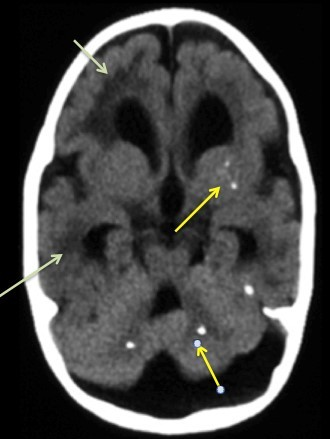
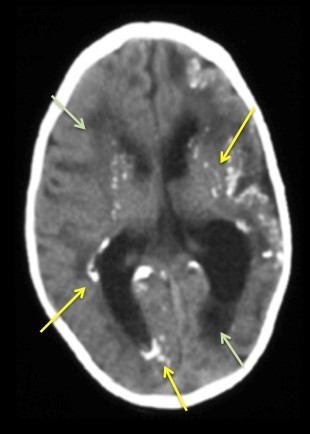
Q2
hard QID 61306
Correct
A 45 year old male presents to the ER after a high speed motor vehicle collision. What is the most likely diagnosis depicted by the arrow shown below?
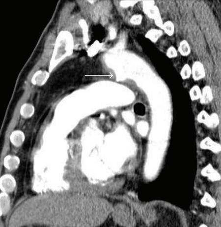
APseudoaneurysm(59%)
BDuctus diverticulum(36%)
CUlcerative plaque(2%)
DLigamentum arteriosum(3%)
Your answerA
Correct answerA. Pseudoaneurysm
Explanation
Pseudoaneurysm
Sagittal contrast-enhanced CT shows an irregular and somewhat angulated outpouching at the medial aspect of the aortic isthmus, consistent with pseudoaneurysm. This diagnosis falls within a spectrum of injury designated under the term acute traumatic aortic injury (ATAI). Radiographic signs include mediastinal widening, aortic contour abnormality, and a left apical cap. On CT angiography, direct visualization of the pseudoaneurysm is best depicted on sagittal oblique images. Pseudoaneurysms typically occur at sites of aortic tethering with the vast majority affecting the isthmus and less commonly the aortic root and diaphragmatic hiatus segment.
The majority of patients who suffer from an ATAI are thought to expire at the scene. Even patient who arrive to the hospital alive have been estimated to have mortality rates of up to 50% in the first 24 hours. The Society for Vascular Surgery classifies ATAI into four categories: grade I (intimal tear); grade II (intramural hematoma); grade III (pseudoaneurysm); and grade IV (rupture). These guidelines recommend ATAI grades II-IV to undergo prompt endovascular repair.
Incorrect Answers:
B. The distinction between an aortic pseudoaneurysm and ductus diverticulum may be challenging. However, ductus diverticula usually demonstrate a smooth contour bulge at the isthmus rather than the irregular angulated appearance shown above.
C. Ulcerative plaque should not extend beyond the mural aortic wall as is seen in this case.
D. The ligamentum arteriosum is a fibrous remnant of the ductus arteriosus which closes after birth. Contrast would not opacify this structure.
Q3
easy QID 37551
Correct
Which of the following will require a higher dose in mammography in order to produce a high-quality image?
AIncreased fat composition(2%)
BDecreased glandularity(1%)
CDecreasing breast thickness(1%)
DIncreasing compression(2%)
EUse of an antiscatter grid(94%)
Your answerE
Correct answerE. Use of an antiscatter grid
Vital Concept
Anti-scatter grids require higher patient dose to compensate for primary beam attenuation - for thin breasts, removing the grid reduces dose without quality loss as increased primary transmission compensates for scatter-induced quantum noise, while for thick breasts, grids remain beneficial as scatter degradation exceeds primary transmission gains.
Explanation
Use of an antiscatter grid
Dosimetry in mammography is an important topic that will appear on the CORE. X-rays transmitted through the breast contain both primary and scattered radiation. It is the primary radiation that retains the information regarding the attenuation characteristics of the breast and delivers the maximum possible subject contrast. Scattered radiation will serve to degrade image quality and increase with increasing breast thickness. An antiscatter grid can be used to help alleviate this issue, but the cost is that a higher dose is required to produce the image. This is so because more primary radiation is needed.
Incorrect Answers:
A and B. Increased fat composition of the breast, or equivalently decreased glandularity, means that there is less tissue to cause scatter radiation, thus decreasing the dose.
C and D. Similarly, increasing breast compression has the effect of decreasing breast thickness, which will reduce scattered X-rays, geometric blurring, and have the effect of lowering the radiation dose
Vital Concept: Anti-scatter grids require higher patient dose to compensate for primary beam attenuation - for thin breasts, removing the grid reduces dose without quality loss as increased primary transmission compensates for scatter-induced quantum noise, while for thick breasts, grids remain beneficial as scatter degradation exceeds primary transmission gains.
Q4
hard QID 48131
Incorrect
The condition pictured below is most often a result of which of the following?
T1 hypointense signal in lateral talus and calcaneus represents talocalcaneal impingement from adult acquired flatfoot deformity, where hindfoot valgus causes abnormal bone contact and marrow edema.
Explanation
Adult acquired flatfoot deformity
The sagittal T1-weighted image demonstrates extra-articular subcortical cystic changes and bone marrow edema at the lateral talar process and the adjacent calcaneus (red arrows) at the angle of Gissane. These are features of lateral hindfoot impingement. Lateral hindfoot impingement most commonly occurs in middle-aged and older individuals with a chronic hindfoot valgus deformity in the setting of adult acquired flatfoot deformity. Symptoms often include hindfoot pain on weight-bearing, swelling and tenderness in the region anterior and inferior to the lateral malleolus, and limited subtalar range of motion. Subluxation at the talocalcaneal joint has been shown to occur in symptomatic adults with acquired flatfoot, involving a lateral translocation of the calcaneus into valgus malalignment, with the subluxation greater at the anterior and middle talocalcaneal articular facets than at the posterior facet, leading to reduction of articular contact surfaces at these joints. This subluxation causes a change in the overall shape of the foot, with flattening of the longitudinal arch, valgus of the hindfoot, and abduction of the forefoot. With a significant hindfoot valgus deformity, there will be a lateral shift of the main weight-bearing forces at the ankle and hindfoot, from the talar dome towards the lateral talus and also to the fibula. If excessive, this can result in subtalar pathology including degenerative arthritis, sinus tarsi syndrome, or extra-articular bony contact as with lateral hindfoot impingement.
Incorrect Answers:
B. Repetitive trauma to the sinus tarsi is the mechanism proposed behind sinus tarsi syndrome, which may have a similar distribution of symptoms, but different imaging appearance. One would expect to see loss of normal fat signal within the sinus tarsi.
C. Neuropathic arthropathy would produce destructive changes, marked subluxation/ frank dislocation, and productive bony changes. Often the normal anatomy is grossly distorted.
D. Tarsal coalition does not occur between the lateral process of the talus and angle of the calcaneus. Rather, talocalcaneal coalition occurs between the medial subtalar facet.
E. Vascular compromise is the etiology behind avascular necrosis. This most often present in either the talar dome or the talar head following ankle and hindfoot trauma.
Vital Concept: T1 hypointense signal in lateral talus and calcaneus represents talocalcaneal impingement from adult acquired flatfoot deformity, where hindfoot valgus causes abnormal bone contact and marrow edema.
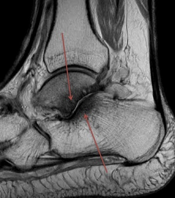
Q5
QID 5038
Correct
Which of the following is true regarding the concept of a "just culture?"
AIt is a form of root cause analysis that does not apply individual blame for errors.(14%)
BDistinguishes errors as human error, at-risk behavior, or reckless behavior.(82%)
CIt is also known as the "Swiss cheese" model of root cause analysis.(1%)
DIt is an unfavored method of root cause analysis due to its punitive nature.(2%)
EIt is a model of management of medicolegal issues once a lawsuit has been filed.(1%)
Your answerB
Correct answerB. Distinguishes errors as human error, at-risk behavior, or reckless behavior.
Vital Concept
Just culture model distinguishes errors as human error, at-risk behavior, or reckless behavior.
Explanation
Distinguishes errors as human error, at-risk behavior, or reckless behavior.
The "just culture" concept focuses on identifying issues resulting in unsafe behaviors, and distinguishes errors as human error, at-risk behavior, or reckless behavior.
Incorrect Answers:
A. The "just culture" concept focuses on identifying issues resulting in unsafe behaviors, but is not independent of blame.
C. The "Swiss cheese" model refers to the concept that major errors are commonly the result of multiple smaller errors and failure of multiple fail-safe mechanisms.
D. A "just culture" concept is not inherently punitive.
E. "Just culture" is a method of root cause analysis aimed at preventing errors and is not related to legal action.
Vital Concept: Just culture model distinguishes errors as human error, at-risk behavior, or reckless behavior.
Q6
easy QID 3008
Correct
Ultrasound images of the right ovary are shown below. What is the diagnosis for this 40-year-old female patient with right-sided pelvic pain?
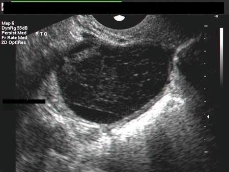
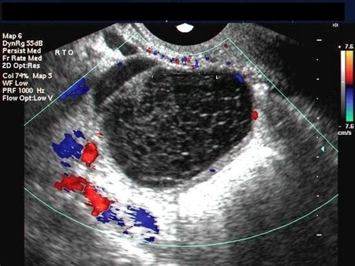
ASerous cystadenoma of the right ovary(1%)
BHemorrhagic cyst of the right ovary(94%)
CMucinous cystadenoma of the right ovary(1%)
DMucinous cystadenocarcinoma of right ovary(0%)
EEndometrioma(4%)
Your answerB
Correct answerB. Hemorrhagic cyst of the right ovary
Vital Concept
Avascular cystic structure with diffuse reticular internal echoes represents hemorrhagic cyst. The lacy, net-like pattern from fibrin strands is characteristic. Typically resolves on follow-up, distinguishing it from persistent endometriomas with ground-glass appearance.
Explanation
Hemorrhagic cyst of the right ovary
Multiple, thin fibrinous strands are seen within the large cyst in the right ovary. This is a typical appearance of a hemorrhagic ovarian cyst. The color Doppler ultrasound image shows no evidence of vascularity within the mass, suggesting a benign pathology. The left corner of the image shows early retraction of hematoma within the cyst.
Incorrect Answers:
A. A serous cystadenoma would show almost entirely fluid content with or without a few septae traversing through the cyst.
C. A mucinous cystadenoma would show echogenic fluid with multiple thick-walled septae within the cyst.
D. This does not show any indication of a malignant mass of the ovary. There is no evidence of any solid nodules within the lesion.
E. An endometrioma of the ovary would show fine homogenous echo pattern seen as fine echoes within a cystic lesion. There is no evidence of this in this lesion.
Vital Concept: Avascular cystic structure with diffuse reticular internal echoes represents hemorrhagic cyst. The lacy, net-like pattern from fibrin strands is characteristic. Typically resolves on follow-up, distinguishing it from persistent endometriomas with ground-glass appearance.
Q7
moderate QID 20789
Incorrect
Which of the following is the mechanism of injury in this 27-year-old male patient with right shoulder pain?
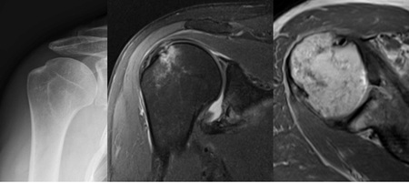
AFall on outstretched hand(1%)
BAnterior shoulder dislocation(88%)
CBlunt trauma(0%)
DPosterior shoulder dislocation(5%)
ERepetitive stress from weightlifiting(6%)
Your answerE
Correct answerB. Anterior shoulder dislocation
Explanation
Anterior shoulder dislocation
The frontal shoulder radiograph shows deformity at the posterior lateral aspect of the humeral head (green arrows) consistent with a Hill-Sachs impaction fracture. Axial PD and coronal T2 fat-sat MRs through the shoulder again demonstrate the Hill-Sachs lesion, as well as a fracture through the anterior glenoid (red arrows) with abnormal signal in the anterior labrum. This represents an associated Bankart lesion. These injuries are seen in up to 80% of anterior shoulder dislocations. Given the high prevalence, it is important to obtain post-reduction films to evaluate for these injuries, which may be harder to detect on pre-reduction radiographs.
Incorrect Answers:
A. A fall on an outstretched hand is the common mechanism of wrist, elbow, and humeral head fractures.
C. Blunt force is too vague, and there is a much more specific answer.
D. Reverse Hill-Sachs lesions result from posterior shoulder dislocation, which are much rarer and typically require seizure or electrical injury to create the awkward mechanics necessary for the injury. The opposite pattern is observed as to what is seen here: anteromedial humeral head impaction fracture and posterior glenoid fracture.
E. Repetitive stress from weightlifting can cause shoulder pain due to acromioclavicular joint arthropathy.
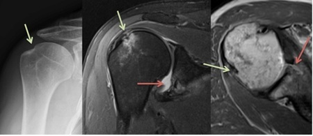
Q8
moderate QID 22437
Correct
A 24-year-old female patient with a history of multiple uterine dilatation and curettage procedures presents with severe persistent vaginal bleeding and elevated beta HCG. Color and pulse Doppler sonographic evaluation is performed. Which of the following is the mechanism for the appearance of the pulsed Doppler waveform?
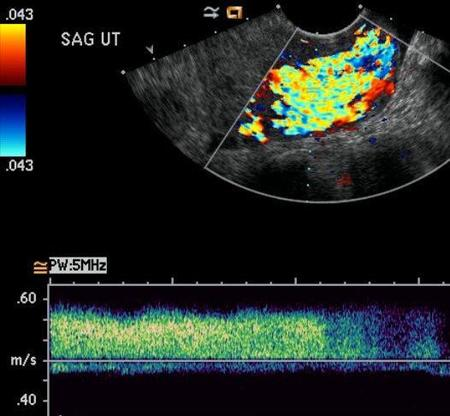
AVascular stenosis(7%)
BLow-resistance vascular bed(85%)
CRespiratory variability(1%)
DPoor positioning of the Doppler gate(4%)
Your answerB
Correct answerB. Low-resistance vascular bed
Vital Concept
Low resistance vascular beds show low pulsatility arterial waveforms with continuous diastolic flow. Spectral Doppler demonstrates high peak systolic velocities with maintained diastolic flow and spectral broadening. Color Doppler displays prominent vessels that "light up" with high velocity flow throughout the cardiac cycle.
Explanation
Low-resistance vascular bed
The Doppler ultrasound shows marked endometrial blood flow (yellow arrow) with a low-resistance venous waveform (red arrow) characterized by very high diastolic flow (blue arrows). This appearance is suspicious for retained products of conception. Placental vessels are low-resistance vessels and allow rapid arterial inflow without significant resistance due to the lack of an intervening capillary bed between arterial and venous structures. This is essentially the same mechanism for the low-resistance waveform seen in a vascular malformation or fistula. The lack of resistance to arterial inflow allows continuous flow without significant pulsatility and produces a persistently elevated flow volume without the normal arterial waveform.
Incorrect Answers:
A. Vascular stenosis can produce significantly elevated peak systolic velocities with rapid upstroke at the stenosis. Frequently, there is associated aliasing because the peak systolic velocity exceeds the maximum value available on the scale. However, pulsatile waveforms remain unless there is near-complete vascular occlusion.
C. Respiratory variability is seen in venous Doppler examination and is characterized by variability of flow velocity during the respiratory cycle. Typically this finding indicates patency of venous structures central to the interrogated vessel.
D. If the Doppler gate is positioned at greater than 60 degrees to the direction of vascular flow, the peak systolic velocity can be underestimated. If the Doppler gate is positioned at 90 degrees to the direction of vascular flow, the images may give the false impression of vascular occlusion or absence of flow due to the fact that the Doppler equation for flow velocity varies as cos (Doppler angle). (Remember that cos 90 = 0.)
Vital Concept: Low resistance vascular beds show low pulsatility arterial waveforms with continuous diastolic flow. Spectral Doppler demonstrates high peak systolic velocities with maintained diastolic flow and spectral broadening. Color Doppler displays prominent vessels that "light up" with high velocity flow throughout the cardiac cycle.
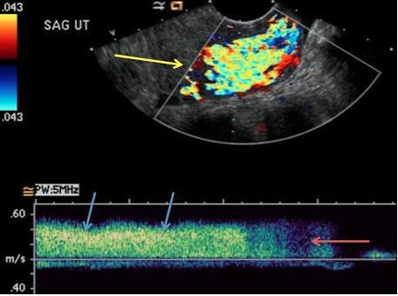
Q9
easy QID 39317
Correct
A hospital radiologist has recently received a memorandum from their administrators stating that their rate of reading images needs to increase in order to maximize efficiency. As a result, the radiologist begins skipping critical aspects of images, which affects the accuracy of the readings. Which of the following principles of professionalism has the policy most likely violated?
APatient autonomy(0%)
BPrimacy of patient welfare(97%)
CPracticality(2%)
DSocial justice(0%)
ESubordination(1%)
Your answerB
Correct answerB. Primacy of patient welfare
Explanation
Primacy of patient welfare
The administration's policy is jeopardizing patient safety in an attempt to increase efficiency. As a result, it is violating the principle of primacy of patient welfare. The primacy of patient welfare is based on physicians dedicating their service to patients, without compromising because of market forces, societal pressures, or administrative exigencies. The primacy of patient welfare contributes to the trust that is central to the physician-patient relationship.
Incorrect Answers:
A. The principle of patient autonomy is based on empowering patients to make informed decisions about their treatment. Physicians must take great care to allow patients’ decisions to dictate their treatment plan, as long as those decisions are in keeping with ethical practice and do not lead to demands for inappropriate care.
C. Practicality is not a principle of professionalism, although physicians make practical decisions in their practice daily. While physicians may be forced to compromise on some issues, they should never compromise the quality of care they provide to patients.
D. The principle of social justice is based on the fair distribution of resources and the elimination of discrimination within the health care field. Promoting social justice is not only an altruistic act, but it also promotes trust between physicians and the communities they serve.
E. Subordination is not a principle of professionalism, although physicians do have an obligation to follow their superiors’ instructions. When these instructions jeopardize patient safety or other ethical principles, physicians have a professional and ethical responsibility to oppose such instructions.
Q10
easy QID 18092
Correct
In the image below, which of the following is the structure indicated by the arrow?
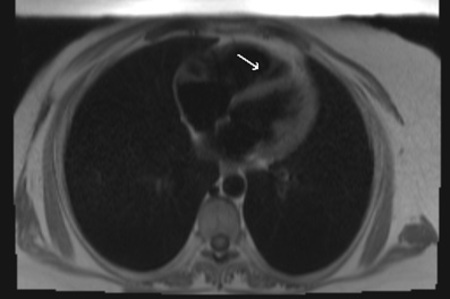
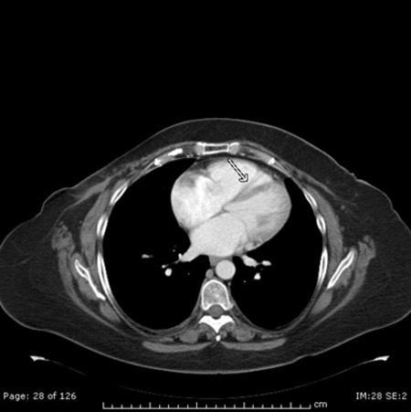
AModerator band(94%)
BCrista terminalis(2%)
CPapillary muscle(3%)
DVentricular trabeculation(1%)
Your answerA
Correct answerA. Moderator band
Explanation
Moderator band
The moderator band is one of the trabeculae carneae in the right ventricle. It carries part of the right branch of the AV bundle from the septum to the anterior papillary muscle on the opposite wall of the ventricle. It is also called trabecula septomarginalis. It is an important landmark that can help identify the anatomic right ventricle.
Incorrect Answers:
B. The crista terminalis is a smooth muscular ridge that extends vertically and anteriorly from the orifice of the SVC to the orifice of the IVC. The right atrium proper lies anterior to the crista terminalis. It is an important landmark that can help identify the anatomic right atrium.
C. The papillary muscles extend from the ventricular wall or the inter-ventricular septum to the plane of the AV valves.
D. Ventricular trabeculations are small undulations in the wall of the ventricle.
Q11
easy QID 37431
Correct
The finding denoted by the more medially oriented radiopaque marker is most likely associated with which of the following?
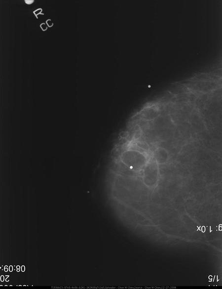
APrior trauma(93%)
BVascular disease(0%)
CDuctal ectasia(3%)
DArtifact(1%)
EInvoluting fibroadenoma(3%)
Your answerA
Correct answerA. Prior trauma
Vital Concept
"Oil cysts" with fat necrosis are thin capsules around a fat density center creating an "eggshell" appearance. Fat necrosis can occur with prior trauma (or prior surgery).
Explanation
Prior trauma
The enlarged mammogram demonstrates a well-circumscribed mass which has a lucent fat density center with a thin rim of eggshell calcification. This is the appearance of an oil cyst. The etiology of oil cysts is felt to be most often an end stage of liquefactive fat necrosis of the breast. In the setting of trauma (or prior surgery), fat debris from ruptured lipocytes conglomerates and is phagocytized by macrophages which become lipid-laden foam cells. The wall may then calcify.
Incorrect Answers:
B. Vascular disease would present as vascular calcifications, which would appear as tubular calcifications in the linear and branching distribution of an arborizing blood vessel.
C. Ductal ectasia presents with large rod- and cigar-like calcifications (aka secretory calcifications) in a linear and branching distribution, which fill the dilated ducts.
D. Artifacts are very important to recognize in mammography as they may confound true pathology. Punctate radio opaque densities may actually be on the screen film or in skin folds (as from deodorants and talc powders), and not in the breast tissues themselves.
E. Involuting fibroadenomas tend to be present in post-menopausal patients and often contain coarse popcorn calcification which can involve the entire fibroadenoma.
Vital Concept: "Oil cysts" with fat necrosis are thin capsules around a fat density center creating an "eggshell" appearance. Fat necrosis can occur with prior trauma (or prior surgery).
Q12
easy QID 38131
Correct
Which of the following is most accurate regarding the mass depicted below?
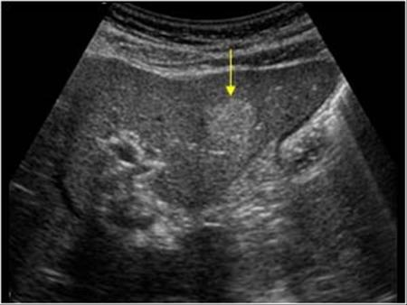
AIt is malignant(1%)
BBleeding is a common complication(10%)
CHistologically it is made up of thin-walled endothelial-lined vascular channels(88%)
DMost patients present with symptoms(0%)
EMales are affected more than females(1%)
Your answerC
Correct answerC. Histologically it is made up of thin-walled endothelial-lined vascular channels
Explanation
Histologically it is made up of thin-walled endothelial-lined vascular channels
Hemangiomas are composed of variably sized vascular spaces lined by flat endothelial cells with surrounding fibrous stroma, which increase as the lesion ages. This single image of the left hepatic lobe demonstrates a hyperechoic mass with well-defined margins and posterior acoustic enhancement, which is characteristic of a hepatic hemangioma. The diagnosis of hemangioma can usually be made with high specificity if the typical aforementioned imaging characteristics are present. Intratumoral hemorrhage is rarely encountered in hepatic hemangiomas and can occur spontaneously or after anticoagulation therapy.
Incorrect Answers:
A. These are benign, non-neoplastic, hypervascular liver lesions.
B. Bleeding is not a common complication.
D. They are frequently diagnosed as an incidental finding on imaging, and most patients are asymptomatic.
E. Hemangiomas are common and are much more frequently seen in women, with a female-to-male ratio reported to be as high as 5:1.
Q13
hard QID 43900
Correct
Which of the following statements is most accurate regarding the entity seen in this 18-year-old male with heel pain?
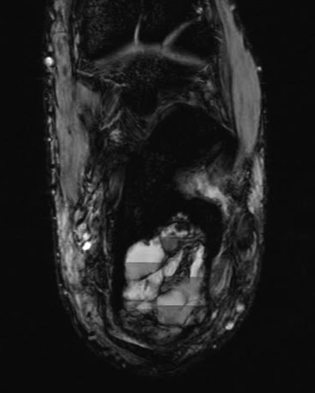
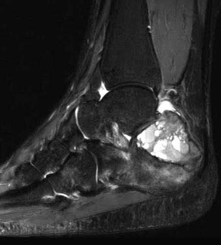
AThese findings generally do not present with pathological fractures.(16%)
BThis patient’s age is unusual for this finding.(3%)
CThis finding is completely characterized with the given images.(10%)
DThis finding demonstrates the 'doughnut sign' on bone scintigraphy.(66%)
ETreatment is not likely necessary for this finding.(4%)
Your answerD
Correct answerD. This finding demonstrates the 'doughnut sign' on bone scintigraphy.
Explanation
This finding demonstrates the 'doughnut sign' on bone scintigraphy.
The sagittal fat-saturated T2-weighted MR shows an expansile lesion in the posterior calcaneus with numerous cystic spaces and fluid-fluid levels (blue arrows) as well as surrounding marrow edema (red arrow). The axial gradient echo sequence nicely demonstrates the fluid-fluid levels (blue arrows) and shows areas of blooming artifact (orange arrows), which occur secondary to magnetic susceptibility caused by hemorrhage in this lesion. The MR features are consistent with a differential diagnosis including aneurysmal bone cyst (ABC) and telangiectatic osteosarcoma (TO). A post-contrast phase (not shown) would be essential to fully evaluate for enhancing soft tissue that is characteristic of telangiectatic osteosarcoma.
ABC and TO are both osseous lesions that present with multiple cystic fluid-fluid levels. Unlike the benign ABC, TO is malignant and will usually have significant enhancing soft tissue component with wider zone of transition and cortical destruction. On bone scintigraphy, both ABC and TO can produce the 'doughnut sign', in which the there is increased radiotracer uptake in the periphery of the lesion with a photopenic center, corresponding to the cystic component.
Incorrect Answers:
A. Associated pathological fractures can occur secondary to both ABC and TO.
B. 80% of ABC occur in patients under 20 years of age; median age for TO is 15-20 years.
C. A post-contrast phase (not shown) would be essential to fully evaluate for enhancing soft tissue that is characteristic of TO. Though ABC can have rim-enhancement, it should not have much of a soft tissue component.
E. Both entities under differential consideration require treatment. ABCs most often present with pain and swelling; despite being benign, these findings are often treated with surgical curettage. Because TO is malignant, treatment usually involves pre-operative chemotherapy and wide resection of the lesion.
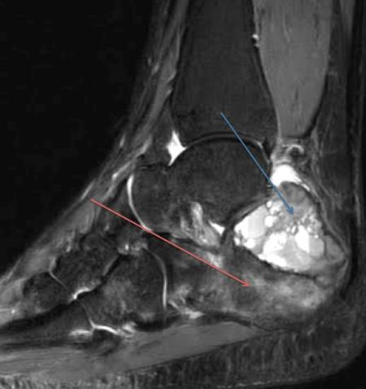
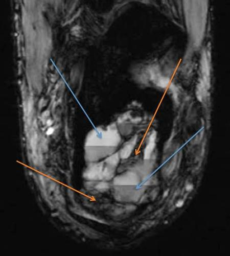
Q14
moderate QID 21096
Correct
The images are from a 21-year-old male patient with multiple gunshot wounds to the chest. Which of the following is the most likely diagnosis?
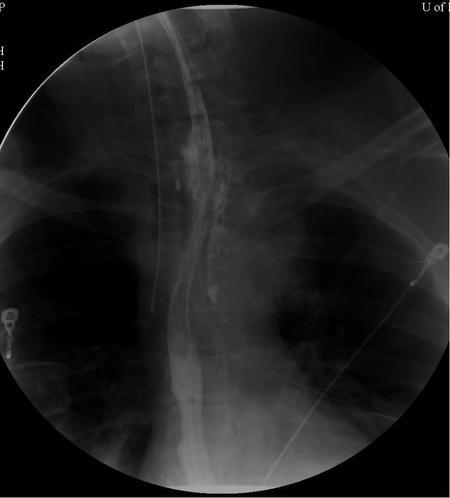
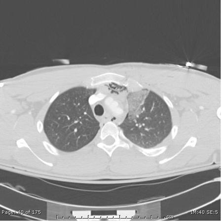
ATracheal perforation(1%)
BEsophageal perforation(90%)
CTracheo-esophageal fistula(7%)
DAortic transection(1%)
Your answerB
Correct answerB. Esophageal perforation
Explanation
Esophageal perforation
The CT shows pneumomediastinum, left small pneumothorax, and left apical pulmonary contusion. The mediastinal air is adjacent to the upper thoracic esophagus. The water-soluble contrast upper GI study shows extravasation of the contrast to the left of the opacified esophagus in the upper thorax, confirming that the mediastinal air is due to an esophageal injury. In cases of suspected esophageal injury, a water-soluble contrast that is iso-osmolar should be used to avoid mediastinitis or pulmonary edema. Barium is contraindicated in these cases.
Incorrect Answers:
A. The trachea is normal.
C. There is no opacification of the trachea on the upper GI study to suggest a fistula.
D. The aorta is normal.
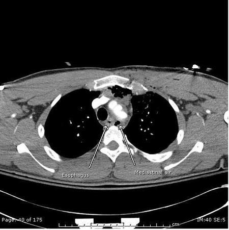
Q15
moderate QID 18083
Correct
A 42-year-old female patient with incidental finding on chest x-ray (CXR) presents for further evaluation on magnetic resonance imaging (MRI). In counseling this patient regarding the treatment for their lesion, which of the following statements should the treating physician communicate to the patient?
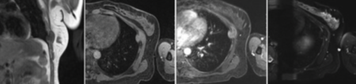
AThis lesion is frequently widely metastatic at diagnosis.(4%)
BThis lesion is frequently associated with pheochromocytomas.(8%)
CThis lesion is best treated with aggressive antibiotic therapy.(3%)
DHigh recurrence rates are seen after surgical resection.(84%)
Your answerD
Correct answerD. High recurrence rates are seen after surgical resection.
Explanation
High recurrence rates are seen after surgical resection.
Coronal T1 pre-contrast (left), axial T1 fat saturation pre- and post-contrast (middle) and T2 fat saturation (right) magnetic resonance images of the left chest wall show a dumbbell-shaped mass centered in the left intercostal space with extrapleural extension into the left thorax (blue arrows).
This mass is homogeneously nearly isointense to muscle on all sequences and enhances rather symmetrically (red arrow). There is no bony destruction or lung invasion. These findings are consistent with an extra-abdominal desmoid tumor.
Extra-abdominal desmoid tumors have a peak age of occurrence of 25 to 40 years and are more common in the female population. Intra-abdominal desmoids are associated with familial adenomatous polyposis and Gardner’s syndrome, where most of these tumors are seen within the small bowel mesentery. Intra-abdominal and extra-abdominal desmoids possess the same histology. Desmoids do not metastasize but are locally aggressive and are known to recur after resection.
Incorrect Answers:
A. Desmoid tumors are locally aggressive but are not known to metastasize.
B. Pheochromocytomas (and other paragangliomas) may be seen in patients with neurofibromatosis type 1. These patients may develop neurofibromas along the intercostal nerves. However, this lesion does not display the typical features of a neurofibroma, which is a T2 hyperintense, often brightly enhancing lesion in contiguity with the nerve.
C. Chest wall infections may be encountered, sometimes arising from the pleural space as the extension of an empyema (empyema necessitans). In these cases, aggressive surgical debridement and antibiotic therapy are indicated.
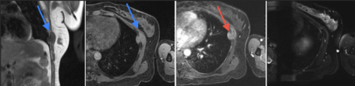
Q16
moderate QID 5000
Incorrect
In terms of quality control measures performed on dose calibrators, which of the following schedules is correct?
AConstancy: quarterly"'(6%)
BLinearity: monthly'(11%)
CAccuracy: annually"'(77%)
DGeometry: daily"'(5%)
Your answerB
Correct answerC. Accuracy: annually
Vital Concept
Dose calibrator QC includes four essential tests with specific frequencies: daily constancy testing ensures day-to-day reliability, quarterly linearity testing verifies accurate response across all activity ranges, annual accuracy testing confirms measurement precision against traceable standards, and geometry testing at installation/repair ensures consistent readings across different vial and syringe sizes. This tiered approach balances patient safety with practical workflow demands.
Explanation
Accuracy: annually
Dose calibrator linearity testing is recommended quarterly (versus the minimum annual requirement) because linear response across the full activity range is critical for accurate patient dosing. More frequent testing allows early detection of electronic drift or component degradation that could compromise measurement accuracy, ensuring patient safety and regulatory compliance before problems become significant.
Incorrect Answers:
A. Constancy should be performed daily, not quarterly.
B. Linearity should be performed quarterly, not monthly.
D. Geometry should be performed at installation, not every day.
Vital Concept: Dose calibrator QC includes four essential tests with specific frequencies: daily constancy testing ensures day-to-day reliability, quarterly linearity testing verifies accurate response across all activity ranges, annual accuracy testing confirms measurement precision against traceable standards, and geometry testing at installation/repair ensures consistent readings across different vial and syringe sizes. This tiered approach balances patient safety with practical workflow demands.
Q17
easy QID 2954
Correct
A 54-year-old female presents to her primary care physician (PCP) for the evaluation of recent trouble with swallowing. She has a history of hypertension and osteoarthritis but has otherwise been well and reports no complaints. She reports that her dysphagia occurs when she eats solid foods like beef or pork. There is no personal or family history of cancer, and the patient is a non-smoker. Physical examination reveals a well-appearing female in no acute distress and is otherwise unremarkable. Laboratory studies are within normal limits. The patient's imaging studies are pictured below. Which of the following is the most likely diagnosis?
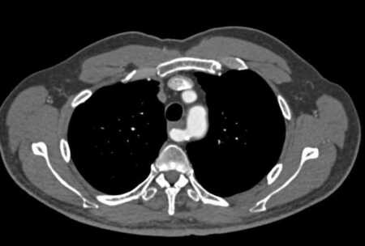
AEsophageal duplication cyst(0%)
BLeft-sided aortic arch with an aberrant right subclavian artery(98%)
CRight-sided aortic arch with an aberrant left subclavian artery(2%)
DDouble aortic arch(0%)
EAneurysmal dilatation of transverse aortic arch(0%)
Your answerB
Correct answerB. Left-sided aortic arch with an aberrant right subclavian artery
Vital Concept
Left aortic arch with aberrant right subclavian artery presenting with dysphagia represents "dysphagia lusoria" caused by the aberrant vessel coursing posterior to the esophagus. As the aberrant right subclavian artery travels from its anomalous origin as the last branch of the aortic arch to reach the right arm, it passes behind and compresses the esophagus, causing extrinsic compression and swallowing difficulty. This is the classic presentation of the most common congenital arch anomaly when it becomes symptomatic.
Explanation
Left-sided aortic arch with an aberrant right subclavian artery
Anomalous development of the aortic arch can result in a variety of anatomic variants that encircle the trachea or esophagus. The most common aortic arch anomaly is an aberrant right subclavian artery that originates from an otherwise normal left-sided aortic arch. This anomaly is frequently identified incidentally.
The aberrant right subclavian artery arises from the posterior portion of the aortic arch and crosses the mediastinum obliquely from left to right, posterior to the esophagus and trachea. Associated conditions include dilatation of the origin of the right subclavian artery, called a Kommerell diverticulum (though this is more common in right aortic arch with aberrant left subclavian, it has been described associated with both right and left aberrant subclavian arteries), and absence of the left recurrent laryngeal nerve. Lateral chest radiography can be normal, or the anomalous artery often manifests as an area of increased opacity with a focal indentation on the posterior wall of the esophagus. Posteroanterior chest radiography reveals an obliquely oriented soft-tissue area of increased opacity that extends superiorly to the right from the superior margin of the aortic arch. Dysphagia from this condition is termed dysphagia lusoria.
Incorrect Answers:
A. Esophageal duplication cysts are congenital, tumor-like lesions of the esophagus. Many patients are asymptomatic, and the abnormality is discovered incidentally. However, bleeding, infection, or the presence of ectopic gastric mucosa can complicate cysts. Most occur in the lower portion of the esophagus; however, duplication cysts that arise in the upper portion of the esophagus may manifest as masses in the retrotracheal space on plain radiography.
On CT, they typically manifest as spherical or tubular masses near the esophageal wall. They are usually homogeneous and have water attenuation. However, they may have soft-tissue attenuation if there is intracystic hemorrhage or proteinaceous debris.
On MRI, duplication cysts have variable signal intensity on T1-weighted images, depending on cyst contents. They have markedly increased signal intensity on T2-weighted images.
C. A right-sided aortic arch anomaly with an aberrant left subclavian artery is usually diagnosed incidentally, although it may cause dysphagia. Radiography demonstrates the absence of a left-sided aortic arch and a well-defined soft-tissue area of increased opacity in the right paratracheal region. Lateral radiography typically reveals a mass-like area of increased opacity in the retrotracheal space. CT and MRI both confirm the diagnosis and differentiate it from a right-sided aortic arch with mirror image branching and a double aortic arch. Right-sided aortic arch anomaly with an aberrant left subclavian artery is more commonly associated with Kommerell's diverticulum.
D. The double aortic arch is one of the most common symptomatic arch anomalies. It usually presents in infancy as respiratory distress or feeding difficulty caused by tracheal or esophageal compression. The right arch is usually larger, higher, and more posterior than the left arch. Both arches join posteriorly to form a single descending aorta. This single descending aorta is typically left-sided. Chest radiography shows a right paratracheal mass-like area of increased opacity. It may mimic mediastinal adenopathy. Lateral chest radiography demonstrates large area of increased opacity in the retrotracheal space.
E. Aneurysm is defined as dilatation of the aorta of greater than 150% of its normal diameter for a given segment. For the thoracic aorta, a diameter greater than 3.5 cm is generally considered dilated, whereas greater than 4.5 cm would be considered aneurysmal. Dilatation occurs as a result of age-related degenerative changes, congenital abnormalities, connective tissue disorders, infections, prior surgery, trauma, or valvular disease. Aortic aneurysms and pseudoaneurysms can manifest radiographically as fusiform or saccular mass-like lesions that protrude into the retrotracheal space. Thoracic MRI and spiral CT angiography are the diagnostic procedures of choice.
Vital Concept: Left aortic arch with aberrant right subclavian artery presenting with dysphagia represents "dysphagia lusoria" caused by the aberrant vessel coursing posterior to the esophagus. As the aberrant right subclavian artery travels from its anomalous origin as the last branch of the aortic arch to reach the right arm, it passes behind and compresses the esophagus, causing extrinsic compression and swallowing difficulty. This is the classic presentation of the most common congenital arch anomaly when it becomes symptomatic.
Q18
moderate QID 5058
Correct
A 66-year-old female presents with nonproductive cough. Which of the following is the most likely diagnosis?
Mycobacterium avium-intracellulare should be considered in older female patients with right middle lobe and lingular bronchiectasis.
Explanation
Non-tuberculous mycobacterial infection
The predominant finding in the CT image is bronchiectasis and volume loss in the right middle lobe and lingula. In an older adult female, this has a high specificity for a non-tuberculous mycobacterial infection, typically mycobacterium avium-intracellulare (MAI). The disease has a high propensity for older adult Caucasian females and typically is seen in immunocompetent patients.
Incorrect Answers:
A. Tuberculosis typically does not result in bronchiectasis and reactivation TB has a propensity for the upper lobes.
B. This is not the appearance of honeycombing, and the location is unusual to suggest UIP.
C. LAM almost exclusively affects young females of reproductive age and has diffuse thin-walled cysts. There is no predilection for the middle lobe and lingula.
D. Likewise, LCH has a propensity for the upper lobes and manifests as nodules and diffuse bizarre-appearing cysts.
Vital Concept: Mycobacterium avium-intracellulare should be considered in older female patients with right middle lobe and lingular bronchiectasis.
Q19
easy QID 24046
Correct
An upper extremity angiogram is performed on this 35-year-old male patient. Which of the following is the diagnosis?
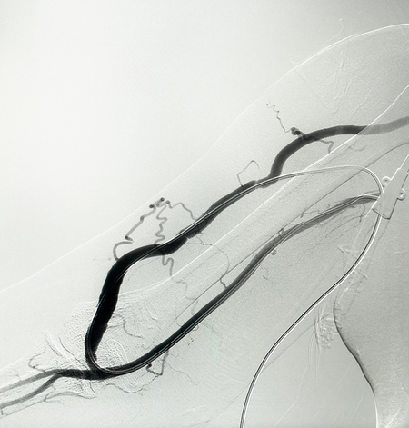
APeripheral vascular disease(1%)
BVeno-occlusive disease(2%)
CArteriovenous fistula(95%)
DArterial dissection(2%)
EArteriovenous malformation(1%)
Your answerC
Correct answerC. Arteriovenous fistula
Vital Concept
Post-trauma arteriovenous fistula in the upper extremity appears on DSA as early venous opacification during the arterial phase, with direct communication between an artery and vein. DSA precisely identifies the feeding artery, draining vein, and exact site of abnormal communication, and may reveal associated complications like pseudoaneurysms from repeated vascular injury.
Explanation
Arteriovenous fistula
This is an abnormal connection whereby an artery and vein directly communicate with one another, as demonstrated here by the early filling of the venous system in this arterial phase image. This is in contradistinction to an arteriovenous malformation, where the arterial and venous systems communicate through a disorganized capillary bed. In addition, tortuous feeding arteries and tangles of draining veins and a nidus are features of an arteriovenous malformation, which are not seen in these images.
Incorrect Answers:
A. Peripheral vascular disease presents angiographically as multifocal luminal irregularities.
B. Veno-occlusive disease is less often diagnosed angiographically, but findings would be of a focal filing defect within the deep venous system.
D. Arterial dissection is frequently seen as a linear dissection flap with or without stenosis/ occlusion.
Vital Concept: Post-trauma arteriovenous fistula in the upper extremity appears on DSA as early venous opacification during the arterial phase, with direct communication between an artery and vein. DSA precisely identifies the feeding artery, draining vein, and exact site of abnormal communication, and may reveal associated complications like pseudoaneurysms from repeated vascular injury.
Q20
hard QID 38120
Incorrect
You are asked to evaluate a renal study in a 6-year-old patient who is 2 day postoperative following a renal transplant. Their urine output was initially good but then dropped significantly. Which of the following is the most likely diagnosis?
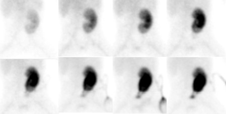
AHyperacute rejection(4%)
BAcute rejection(21%)
CAnastomotic leak(63%)
DRenal artery stenosis(2%)
Your answerB
Correct answerC. Anastomotic leak
Explanation
Anastomotic leak
This is a Tc99m-MAG3 renal scan. MAG3 has minimal glomerular filtration and is cleared almost exclusively by tubular secretion. As such, it is useful in assessing many complications including acute rejection, acute tubular necrosis, vascular problems, obstruction, and urinary leaks. In the case below there is prompt cortical uptake of the tracer (purple arrow), subsequent medullary transit (blue arrows), and on the later images tracer uptake within the left pelvis and within the surgical drain, which is distinct from the tracer excreted into the urinary location of the bladder (yellow). These diagnostics are indicative of an anastomotic leak.
Incorrect Answers:
A. Hyperacute rejection occurs in the peri-operative period and would be immediately apparent to the surgeon. It occurs because of preformed, circulating host antibodies to the graft.
B. D. In both acute transplant rejection and renal artery stenosis there would be no cortical uptake of the tracer. Acute rejection begins as early as one week after transplant, the risk being highest in the first three months, though it can occur months to years later. Transplant renal artery stenosis (TRAS) is a recognized, potentially curable cause of post-transplant arterial hypertension, allograft dysfunction, and graft loss. It usually occurs 3 months to 2 years after transplantation, but earlier or later presentations are not uncommon.
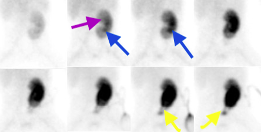
Q21
moderate QID 3011
Correct
A 52-year-old female patient reports menstrual irregularity and pelvic pain. Which of the following statements is true?
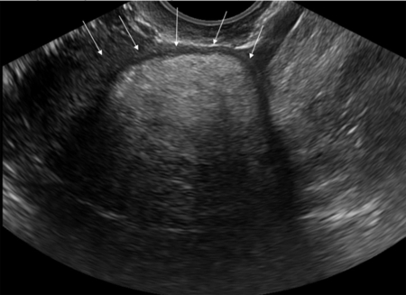
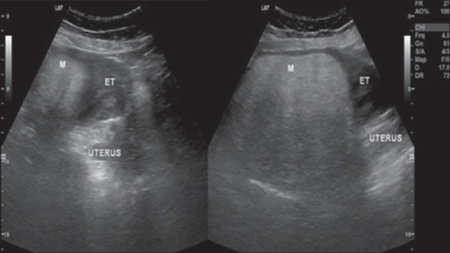
AThe most significant finding is the presence of fluid in the endometrial cavity.(3%)
BEchogenic mass in the body of the uterus most likely represents lipoleiomyoma.(89%)
CThe most likely diagnosis is a malignant mass of the uterus.(6%)
DThis is a surgical emergency.(2%)
Your answerB
Correct answerB. Echogenic mass in the body of the uterus most likely represents lipoleiomyoma.
Vital Concept
Lipoleiomyomas appear hyperechoic due to acoustic impedance mismatch between fat and muscle, creating strong reflective interfaces. Internal septations from mixed fat/muscle composition and minimal vascularity of mature fat tissue complete the characteristic appearance.
Explanation
Echogenic mass in the body of the uterus most likely represents lipoleiomyoma.
The echogenic mass in the body of the uterus is most likely a lipoleiomyoma based on its sonographic appearance. The presence of fatty tissue along with smooth muscle and fibrous tissue can result in echogenic appearance of this lesion with dirty shadowing, as seen in this case. A lipoleiomyoma is a benign tumor and is usually small.
Incorrect Answers:
A. The presence of fluid in the endometrial cavity is just an incidental finding and does not have any significance.
C. Lipoleiomyoma is a benign mass of the uterus.
D. There is no need for any urgent surgical intervention in this case.
Vital Concept: Lipoleiomyomas appear hyperechoic due to acoustic impedance mismatch between fat and muscle, creating strong reflective interfaces. Internal septations from mixed fat/muscle composition and minimal vascularity of mature fat tissue complete the characteristic appearance.
Q22
hard QID 20769
Correct
Which of the following is true regarding the location of the needle in relation to the lesion on this stereotactic biopsy post-fire diagram?
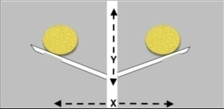
AGood position(4%)
BOnly x-axis error(3%)
CCombined x-axis and y-axis errors(5%)
DOnly y-axis error(61%)
Your answerD
Correct answerD. Only y-axis error
Explanation
Only y-axis error
Pre-fire and post-fire -15˚ (left) and +15˚ (right) images are acquired during stereotactic biopsy. The above post-fire images demonstrate the needle below the target. Adjustment will be to move the needle in the the y-axis toward the lesion or to biopsy above the needle.
Incorrect Answers:
A. This is not a well-positioned needle.
B. C. As shown in the diagram below, a x-axis error would show the needle to the left or right of the lesion. There is no x-axis error here.
Q23
moderate QID 24101
Correct
The lesion shows early enhancement with rapid washout, and the patient is noted to have nipple retraction. According to the image provided, how would the provider report this lesion?
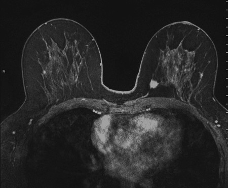
ABIRADS 0(0%)
BBIRADS 1(0%)
CBIRADS 2(0%)
DBIRADS 3(0%)
EBIRADS 4(17%)
FBIRADS 5(81%)
Your answerF
Correct answerF. BIRADS 5
Vital Concept
Spiculated margins, rim enhancement, and washout kinetics on breast MRI constitute BI-RADS 5 assessment with greater than 95% cancer probability, mandating immediate biopsy and surgical consultation.
Explanation
BIRADS 5
This is a T1 weighted post-contrast MR. It shows an enhancing spiculated left breast mass (red arrow). Reportedly there are washout kinetics. This is a highly suspicious finding, with a greater than 95% chance of malignancy. Appropriate action should be taken.
A BI-RADS 5 lesion has the typical imaging features of breast malignancy. On a mammogram, any two of the following features are demonstrated: Nipple retraction, skin thickening and evidence of interval growth, if present, would support the diagnosis.
Incorrect Answers:
A. BI-RADS 0 is used for findings that need additional imaging evaluation and/or prior mammograms for comparison.
B. BI-RADS 1 indicates a negative assessment.
C. BI-RADS 2 is reserved for benign findings.
D. BI-RADS 3 indicates probably benign findings, for which short-interval follow-up is recommended. This should have a less than 2% chance of malignancy.
E. BI-RADS 4 indicates a suspicious finding for which biopsy should be considered. This is a broad category that spans from > 2% to < 95% chance of malignancy.
Vital Concept: Spiculated margins, rim enhancement, and washout kinetics on breast MRI constitute BI-RADS 5 assessment with greater than 95% cancer probability, mandating immediate biopsy and surgical consultation.
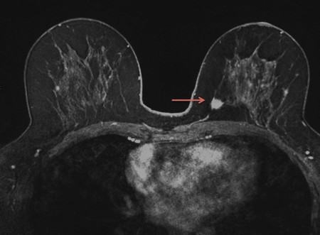
Q24
easy QID 41464
Correct
Which of the listed radiation-induced effects follows a linear no-threshold hypothesis?
ASterility(0%)
BCataracts(3%)
CCancer(93%)
DRadiation sickness(1%)
ESkin erythema(3%)
Your answerC
Correct answerC. Cancer
Explanation
Cancer
In radiation biology, there are two main types of effects induced by radiation exposure: stochastic and deterministic. Stochastic effects are random, and there is no defined relationship between the dose and the defect. Cancer and birth defects fall into this category. The current thinking is that stochastic effect occurrence follows a linear no-threshold hypothesis. This means that although there is no threshold level for these effects, the risk of an effect occurring increases linearly as the dose increases. The proposed mechanism behind stochastic effects is damage to DNA by the ionizing radiation during cell division. Deterministic effects have a clearly defined threshold above which the provider will see the effect, and below which they will not. These include sterility, cataracts, radiation sickness, and skin erythema.
Q25
moderate QID 63874
Correct
A woman presents after a miscarriage for anatomic evaluation. Representative images from her ultrasound are provided below. Based on the representative images, what is the best way to differentiate between the possible etiologies of these findings at ultrasound?
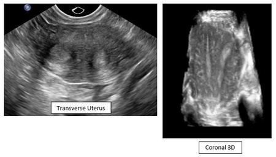
ASagittal transabdominal views depicting the endometrial stripes(6%)
BCoronal views depicting both uterine ostia at the level of the fundus.(26%)
CImages of the ovaries/adnexa(4%)
DColor Doppler images of the divided endometrium.(2%)
Your answerB
Correct answerB. Coronal views depicting both uterine ostia at the level of the fundus.
Explanation
Coronal views depicting both uterine ostia at the level of the fundus.
Explanation:
Tissue dividing the endometrial cavity extends from the fundus to the external cervical os and may extend into the vagina. The presence of a fundal cleft is a highly reliable sign to differentiate fusion anomalies, such as bicornuate uterus, from reabsorption anomalies (such as septate or arcuate uterus). On the representative 3D coronal image, the fundus appears somewhat flat and at an oblique angle; as imaged, it is not clear that the image is at the level of the uterine ostia and the oblique angle of the fundus is not definitively within normal limits with respect to external fundal contour. To optimally depict the uterine anomaly present on ultrasound, ensure that there is an image showing both uterine ostia at the level of the fundus.
A line drawn between the uterine ostia can be used to differentiate between a septate and bicornuate uterus. In a septate uterus, the apex of the external fundal contour is greater than 5 mm above the interostial line. In a bicornuate uterus, the apex of the external fundal contour is below or less than 5 mm above the interostial line.
Incorrect Answers:
A. Though sagittal depiction of both endometrial stripes allows for their thorough evaluation, the presence of these images would not specifically help to limit the differential.
C. Imaging of the ovaries/adnexa will not help to specifically limit the differential of the findings shown.
D. Color Doppler images of the divided endometrium may aid in procedural planning, but do not specifically help to assess the fundal contour of the uterus, as described above.
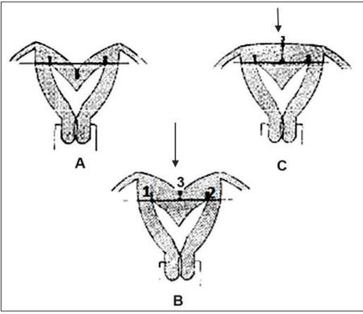
Q26
moderate QID 4985
Incorrect
Which of the following is demonstrated by the MRI shown below?
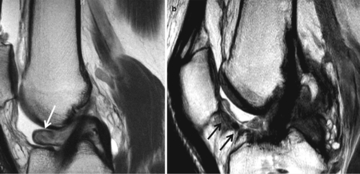
ARoof impingement(4%)
BTibial interference screw migration(4%)
CArthrofibrosis(80%)
DPigmented villonodular hyperplasia(6%)
EAnterior cruciate ligament (ACL) graft tear(6%)
Your answerD
Correct answerC. Arthrofibrosis
Vital Concept
A cyclops lesion (localized anterior arthrofibrosis) is a common complication of reconstruction of the anterior cruciate ligament caused by excessive scar tissue formation within the joint capsule. It consists of a rounded fibrous mass in the anterior intercondylar notch that is formed of central granulation tissued lined by synovium and surrounded by dense fibrous tissue. This entity can also be iatrogenic/post-traumatic, as seen in this case.
Explanation
Arthrofibrosis
The cyclops lesion appears as a well-circumscribed ovoid mass in the intercondylar notch with hypointense to intermediate signal on sagittal T2-weighted images (white arrow). The irregular linear hypointensities throughout the infrapatellar fat pad (black arrow) represent spiculated fibrous tissue and scar formation of the anterior interval characteristic of arthrofibrosis. Arthrofibrosis results from excessive inflammatory response leading to adhesion formation and capsular thickening. The absence of ACL repair suggests this inflammatory process developed iatrogenically or from prior ACL trauma.
Incorrect Answers:
A. Not only can MRI detect and categorize the type of graft impingement, delineate tunnel position, and help in the differentiation of important differential diagnosis also associated with a decreased range of motion such as arthrofibrosis, cyclops lesion, mucoid graft degeneration and intra-articular bodies, it can be also used for the workup of concomitant chondral, meniscal or ligamentous injuries. Anterior cruciate ligament graft impingement is best assessed in coronal and sagittal views and will display a posterior, medial or lateral bowing of the graft away from the impinging structure, namely, from the roof, the lateral sidewall or posterior cruciate ligament. This can be associated with signal alteration in the anterior two-thirds of the graft. The main reason for anterior cruciate ligament graft impingement is an abnormal position of the tibial tunnel in relation to the femoral tunnel opening. One will have roof impingement if the tibial tunnel position is too far anterior.
B. There is no indication of tibial interference screw migration here.
D. Pigmented villonodular hyperplasia (PVNS) would be in the differential of this imaging but it is much less common. PVNS is typically identified by multiple, lobulated intraarticular soft tissue masses on MRI. The lesions generally have intermediate to low signal intensity on both T1 and T2 weighted images. PVNS lesions tend to bleed, resulting in characteristic deposition of very low-signal intensity hemosiderin.
E. MRI allows the detection and evaluation of suspected anterior cruciate ligament graft tears, which can be best depicted in coronal and sagittal views. There is no specific evidence of anterior cruciate ligament tear on the provided images.
Vital Concept: A cyclops lesion (localized anterior arthrofibrosis) is a common complication of reconstruction of the anterior cruciate ligament caused by excessive scar tissue formation within the joint capsule. It consists of a rounded fibrous mass in the anterior intercondylar notch that is formed of central granulation tissued lined by synovium and surrounded by dense fibrous tissue. This entity can also be iatrogenic/post-traumatic, as seen in this case.
Q27
hard QID 18067
Correct
Which of the following correctly lists the cutoff length, above which this structure is considered abnormally elongated?
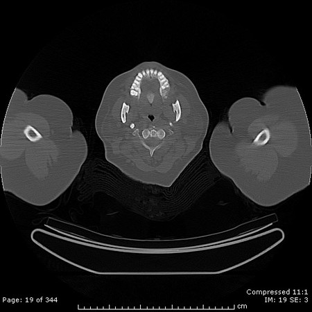
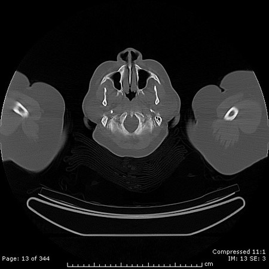
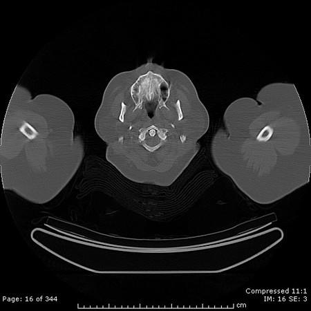
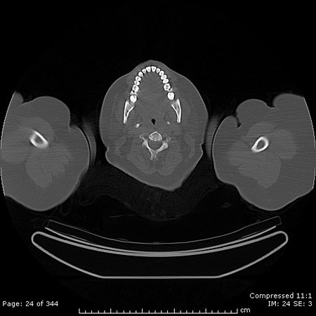
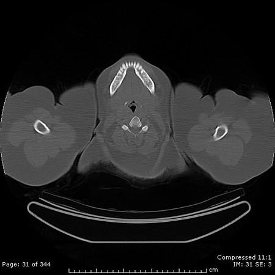
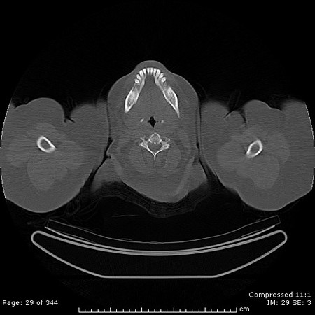
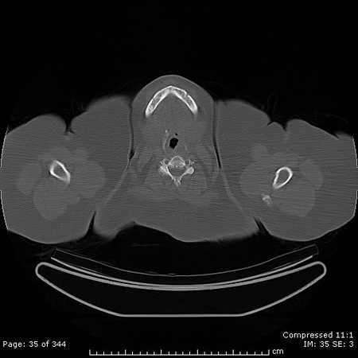
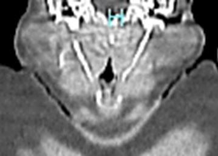
A2 cm(13%)
B3 cm(58%)
C4 cm(17%)
D5 cm(11%)
Your answerB
Correct answerB. 3 cm
Vital Concept
Eagle syndrome causes throat pain and dysphagia from elongated styloid process (>3 cm vs normal approximately 2.5 cm). Only 4% to 10% with elongated styloid are symptomatic.
Explanation
3 cm
This patient has Eagle syndrome, which refers to a symptomatic elongation of the styloid process or calcified stylohyoid ligament. It is often bilateral and is usually idiopathic. The normal length of the styloid in an adult is approximately 2.5 cm, while an elongated styloid is considered > 3 cm. The symptoms are usually secondary to cranial nerve compression (V, VII, IX and X) or carotid artery compression.
Incorrect Answers:
A. C. D. These are incorrect lengths.
Vital Concept: Eagle syndrome causes throat pain and dysphagia from elongated styloid process (>3 cm vs normal approximately 2.5 cm). Only 4% to 10% with elongated styloid are symptomatic.
Q28
hard QID 5028
Incorrect
Which of the following correctly states the primary difference between the Half-Fourier-Acquired Single-shot Turbo Spin Echo (HASTE) imaging when compared to the Conventional Turbo Spin-Echo technique?
AIt utilizes a single 180° refocusing pulse for every single excitation pulse.(14%)
BIt collects more data points per repetition time (TR) interval.(61%)
CIt nearly doubles the image acquisition time.(4%)
DIt is highly sensitive to susceptibility artifacts.(17%)
EIt has higher sensitivity, particularly for small lesions.(4%)
Your answerA
Correct answerB. It collects more data points per repetition time (TR) interval.
Explanation
It collects more data points per repetition time (TR) interval.
Half-Fourier-Acquired Single-shot Turbo spin Echo (HASTE) is a Turbo spin-echo technique that is used for sequential acquisition of high-resolution T2-weighted images. HASTE uses a single-shot technique to acquire sufficient data for an entire image from a single TR. It is becoming more and more widely utilized.
Incorrect Answers:
A. Just as conventional turbo spin sequences do, HASTE utilizes multiple 180° refocusing pulses for every excitation to generate a train of echoes.
C. HASTE is very similar to a conventional turbo spin echo sequence, with the major exception being that only about half of k-space is acquired per TR and symmetry is used to fill in the remaining half. This drastically shortens imaging time (by a factor of one-half) and allows for acquisitions on the order of a second.
D. Both Single Shot Fast Spin Echo (SSFSE) and HASTE having lower sensitivity to susceptibility artifacts than comparable echo-planar imaging (EPI) and gradient echo (GRE) sequences.
E. One major disadvantage of HASTE is that it is less sensitive to small lesions than comparable T2 FSE sequences.
Q29
moderate QID 39258
Incorrect
A 57-year-old post-menopausal female patient presents to the gynecologist with new onset vaginal bleeding. The patient is not taking hormone replacement therapy. The patient is referred for an ultrasound examination. Which of the following is the upper limit of normal for their endometrial thickness?
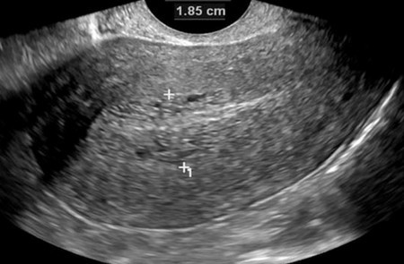
A1.5 mm(1%)
B3 mm(6%)
C5 mm(88%)
D11 mm(4%)
E15 mm(1%)
Your answerD
Correct answerC. 5 mm
Explanation
5 mm
The sagittal uterine ultrasound demonstrates a slightly heterogeneous-appearing endometrium with a thickness of 1.8cm (red arrow), which is abnormally thickened. The postmenopausal endometrial evaluation should take into consideration the patient’s clinical history (e.g., vaginal bleeding) and whether the patient has undergone hormonal replacement therapy. The normal postmenopausal endometrium should appear thin, homogeneous, and echogenic. Although there is controversy regarding endometrial thickness with menopause, in general, a double-layer thickness of less than 5 mm without focal thickening excludes significant disease and is consistent with atrophy. In patients without vaginal bleeding and who are not on hormone replacement therapy (as in this case), the risk of carcinoma is approximately 7% if endometrium is >5 mm and 0.07% if endometrium is <5 mm. The endometrium in a patient undergoing hormonal replacement therapy may vary in thickness, and the acceptable range of endometrial thickness is less well established in this group. Cut-off values of 8-11 mm have been suggested. The risk of carcinoma is about 7% if the endometrium is >11 mm, and 0.002% if endometrium is <11 mm. Any thickness greater than 5 mm in the setting of postmenopausal bleeding or any endometrial heterogeneity or focal thickening seen at transvaginal US should be investigated further with sono-hysterography, biopsy, or hysteroscopy. Endometrial sampling in the gynecologist’s office can lead to false-negative results if a focal abnormality is not sampled.
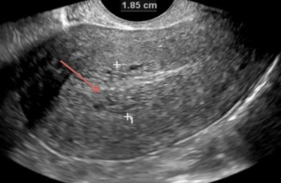
Q30
easy QID 3024
Correct
Abdominal and pelvic ultrasound scan images, including bilateral ovaries, of a 28-year-old female patient are shown below. Which of the following is the most likely diagnosis?
Multiple bilateral prominent ovarian cysts with ascites indicate ovarian hyperstimulation syndrome from assisted reproductive technology. Presence of ascites defines moderate-grade OHSS requiring careful monitoring for progression to severe disease with potential life-threatening complications including thromboembolic events.
Explanation
Ovarian hyperstimulation syndrome
Both ovaries here appear severely enlarged with multiple large cysts bilaterally. There is also evidence of ascites with pleural effusion.
Ovarian hyperstimulation syndrome (OHSS) is an iatrogenic complication of assisted reproduction technology. The syndrome is characterized by cystic enlargement of the ovaries and an exaggerated response to gonadotropin administration and secondary capillary leak syndrome with fluid accumulation in the peritoneal cavity and other potential spaces.
Incorrect Answers:
B. There is no evidence to suggest ovarian malignancy.
C. Serous cystadenoma of the ovary is characterized by a large fluid-filled cyst of the ovary. In this case, both ovaries show multiple large cysts. Usually, cystadenoma is not accompanied by ascites or pleural effusion.
D. See explanation above.
E. This is not a normal study.
Vital Concept: Multiple bilateral prominent ovarian cysts with ascites indicate ovarian hyperstimulation syndrome from assisted reproductive technology. Presence of ascites defines moderate-grade OHSS requiring careful monitoring for progression to severe disease with potential life-threatening complications including thromboembolic events.
Q31
moderate QID 21160
Correct
A 63-year-old female patient with a history of breast cancer presents with diffuse abdominal pain. Which of the following is the diagnosis?
ACirrhosis(0%)
BCongestive heart failure(0%)
CPseudomyxoma peritonei(16%)
DPeritoneal carcinomatosis(83%)
EMesothelioma(0%)
Your answerD
Correct answerD. Peritoneal carcinomatosis
Explanation
Peritoneal carcinomatosis
The combination of small bowel serosal nodularity (blue arrows) and large volume ascites (yellow arrows) and peritoneal thickening and nodularity (green arrows) should raise suspicion for peritoneal metastasis with serosal involvement and associated malignant ascites, especially in the setting of a history of breast cancer. Breast cancer is one of the most commonly associated extra-abdominal malignancies to present with serosal metastasis. Patients with serosal metastatic disease are at risk for associated bowel obstruction.
Incorrect Answers:
A. Cirrhosis-related ascites may be indistinguishable from malignant ascites on imaging studies. However, the presence of serosal nodularity and the given history should suggest metastatic disease.
B. Diastolic or systolic heart failure may also produce marked ascites, similar to cirrhosis. However, the presence of serosal nodularity should suggest an alternate diagnosis.
C. Pseudomyxoma peritonei is a diagnosis encountered in the presence of diffuse peritoneal involvement with a mucinous tumor such as ruptured appendiceal mucocele or mucinous ovarian tumors. The mucinous fluid spreads throughout the peritoneal cavity, exerting mass effect on the solid organs, particularly the liver and spleen, with associated scalloping of their margins.
E. Peritoneal mesothelioma is a relatively uncommon form of mesothelioma that can produce solid omental and peritoneal masses as well as marked ascites. However, based on the history presented, one should first suggest metastatic disease, given the uncommon nature of peritoneal mesothelioma.
Q32
easy QID 3075
Correct
Which of the following is true regarding the pertinent finding?
AThe finding is benign and requires no additional follow-up.(0%)
BThe finding could be related to a non-functioning solid nodule (benign or malignant) or relate to something like a colloid cyst. Correlation with ultrasound is recommended.(99%)
CThe finding is artifactually related.(0%)
DThe finding is typical of a hyperfunctioning nodule.(0%)
Your answerB
Correct answerB. The finding could be related to a non-functioning solid nodule (benign or malignant) or relate to something like a colloid cyst. Correlation with ultrasound is recommended.
Vital Concept
Though cold nodules tend to have a greater malignancy risk than hot nodules, most are still benign. Cold appearance alone is insufficient for definitive cancer diagnosis; correlation with ultrasound features and clinical context is essential.
Explanation
The finding could be related to a non-functioning solid nodule (benign or malignant) or relate to something like a colloid cyst. Correlation with ultrasound is recommended.
A photopenic defect is identified within the right thyroid lobe, compatible with a non-functioning ("cold") thyroid nodule. Uptake in the left thyroid lobe is normal.
The differential diagnosis for a "cold" nodule on thyroid scintigraphy includes thyroid cancer, benign non-functioning adenoma, and cyst (colloid or simple). In order to exclude malignancy, further work-up is necessary. The likelihood of malignancy is significantly increased if the patient is young. The next step should be ultrasound to see if the nodule is cystic.
Incorrect Answers:
A. A solitary cold nodule may be malignant in up to 20% of cases.
C. The finding is compatible with a non-functioning ("cold") nodule.
D. The finding is compatible with a non-functioning nodule. A hyperfunctioning nodule would demonstrate focally increased radiopharmaceutical uptake.
Vital Concept: Though cold nodules tend to have a greater malignancy risk than hot nodules, most are still benign. Cold appearance alone is insufficient for definitive cancer diagnosis; correlation with ultrasound features and clinical context is essential.
Q33
moderate QID 43879
Correct
A 27-year-old patient fell while skiing and injured their thumb. In the provider’s report to the referring orthopedist, it is important to locate and describe which of the following structures?
AAdductor pollicis aponeurosis(80%)
BExtensor pollicis longus tendon(4%)
CExtensor pollicis brevis tendon(4%)
DFlexor pollicis longus tendon(2%)
EAbductor pollicis longus(10%)
Your answerA
Correct answerA. Adductor pollicis aponeurosis
Explanation
Adductor pollicis aponeurosis
The coronal images through the thumb show complete avulsion of the ulnar collateral ligament (UCL – pink arrows) off the base of the first proximal phalanx (blue arrows). An intermediate signal intensity structure, representing the adductor pollicis aponeurosis (orange arrow), can be seen interposed between the UCL and the joint. Stener lesions are seen in the context of a torn ulnar collateral ligament of the thumb's metacarpophalangeal joint (gamekeeper's thumb).
Complete tears of the UCL require prompt diagnosis, with the best results obtained with early surgical intervention. In some patients, the completely torn UCL becomes displaced proximal and superficial to the adductor pollicis aponeurosis. The interposed aponeurosis prevents apposition of the torn UCL to its normal site of insertion at the proximal phalanx.
Incorrect Answers:
B. C. D. E. The other structures are not implicated in UCL tears.
Q34
hard QID 18073
Correct
Which of the following correctly identifies the device shown in the picture below?
AIonization detector(4%)
BDose calibrator(73%)
CGeiger-Müller detector(1%)
DWell counter(22%)
Your answerB
Correct answerB. Dose calibrator
Vital Concept
Dose calibrators are sealed ionization chambers used to measure radioactivity in vials/syringes for patient dosing, handling higher activities. Well counters are scintillation detectors with cylindrical crystal wells for high-sensitivity counting of low-level specimens (blood, urine, wipes), limited to activities up to 0.001 mCi due to dead-time losses at higher activities.
Explanation
Dose calibrator
This is a dose calibrator, which is one type of gas-filled detector. It is used to measure the radiopharmaceutical dose before administering it to the patient. The mCi on the display is within range of a plausible dose to be administered.
Incorrect Answers:
A. An ionization detector is a gas-filled detector that is used for radiation surveys. It is less sensitive but more accurate (the rate of ion pairs development is proportional to the radiation being detected) than the Geiger-Müller detector (the rate of ion pairs development is an amplification of factors of 10 to the radiation being detected). Both are relatively inefficient for the detection of x-ray and gamma-ray but very efficient in detecting charged particles.
C. The Geiger-Müller detector with a pancake probe is ideal for low-level radiation detection secondary to the large surface area of the probe. It is another form of a gas-filled detector. It is a very sensitive radiation detector with a long dead time.
D. The scintillation well counter and thyroid uptake probe are examples of scintillation spectrometers (they are not gas-filled chambers) used in nuclear medicine. The well counter tends to be much more sensitive and is only reliable up to 0.001 mCi. The display of a well counter would more likely show mCi within a range at this much lower level.
Vital Concept: Dose calibrators are sealed ionization chambers used to measure radioactivity in vials/syringes for patient dosing, handling higher activities. Well counters are scintillation detectors with cylindrical crystal wells for high-sensitivity counting of low-level specimens (blood, urine, wipes), limited to activities up to 0.001 mCi due to dead-time losses at higher activities.
Q35
easy QID 63860
Correct
Which of the following conditions can lead to oligohydramnios as shown below?
ARenal agenesis(95%)
BNeural tube defects(2%)
CGastroschisis(1%)
DEsophageal atresia(3%)
Your answerA
Correct answerA. Renal agenesis
Explanation
Renal agenesis
Without kidneys, urine cannot be formed which is required to form amniotic fluid. Risk factors for renal agenesis include maternal diabetes, obesity, smoking, and alcohol use during early pregnancy. Genetic mutations, family history, and prenatal exposure to ACE inhibitors also increase the likelihood. Other common congenital anomalies associated with oligohydramnios include fetal demise, intrauterine growth restriction, premature rupture of membranes and chromosomal abnormalities.
Incorrect Answers:
B. Neural tube defects are associated with polyhydramnios, not oligohydramnios.
C. Gastroschisis is associated with polyhydramnios, not oligohydramnios.
D. Esophageal atresia is associated with polyhydramnios, not oligohydramnios.
Q36
moderate QID 22596
Correct
A 4-year-old male patient presents with worsening headache and vomiting. Which of the following is the most likely diagnosis?
ABrainstem glioma(2%)
BPituitary adenoma(1%)
CCraniopharyngioma(82%)
DBasilar aneurysm(3%)
ERathke cleft cyst(13%)
Your answerC
Correct answerC. Craniopharyngioma
Vital Concept
Pediatric craniopharyngiomas are exclusively adamantinomatous type with uniform imaging features. They consistently demonstrate calcification on CT and T1 bright signal intensity on MRI. Cystic components are nearly universal. These features are much more consistent in children compared to adults, where imaging findings are more variable.
Explanation
Craniopharyngioma
Craniopharyngiomas are benign WHO grade I tumors arising in the sellar region from remnants of Rathke's pouch epithelium. They are typically large, lobular lesions with internal cystic components (best seen on this sagittal T1 – blue arrow), and prominent peripheral calcifications (yellow arrow). The cysts are of variable signal intensity on T1 -and T2-weighted imaging, depending on their contents. They typically have marked enhancement, especially at the cyst walls. There are two types: adamantinomatous and papillary. Adamantinomatous type is most common in pediatric populations and demonstrates the typical solid/cystic appearance with internal calcification and hemorrhage. Papillary type is more common in adults and is typically solid with infrequent calcification.
Incorrect Answers:
A. Brainstem gliomas are tumors of the pediatric brain, which can be characterized as two major types. One type is the diffuse pontine glioma, and the other is focal gliomas involving varying portions of the brainstem. The diffuse pontine glioma is a WHO grade II expansile, infiltrating lesion with characteristic low attenuation on CT and hyperintense T2 signal without significant enhancement. They typically produce an expansile appearance of the pons that engulfs adjacent structures such as the basilar artery. Diffuse pontine gliomas carry a poor prognosis and are typically not amenable to surgical resection, and they are poorly responsive to chemotherapy and radiation. They are more commonly seen in the setting of neurofibromatosis type 1. Focal types of brainstem gliomas, such as tectal gliomas, are typically WHO grade I lesions that are more amenable to surgical resection and carry a better prognosis.
B. Pituitary macroadenomas are on the differential diagnosis for a sellar mass and typically appear as an expansile sellar mass which is isointense to gray matter with heterogeneous enhancement. They may become quite large and develop internal cysts and hemorrhage. Calcification is much less common than in craniopharyngiomas. Macroadenomas are frequently hormonally active, with elevated prolactin levels seen most commonly. They are WHO grade I lesions and are frequently treated with resection, often with a trans-sphenoidal approach. An important consideration in evaluation of pituitary adenomas is the concern for cavernous sinus invasion, which is classically suggested when enhancing tumor is seen encasing the cavernous carotid artery greater than 270° around its circumference.
D. Saccular aneurysms of the basilar artery or other vessels of the circle of Willis should be considered when sellar/ suprasellar masses are encountered. The typical appearance of this lesion will be a T1 and T2 hypointense (flow voids), enhancing lesion with adjacent pulsation artifact. It is important to consider this diagnosis any time a sellar mass biopsy is contemplated, as results could be disastrous if an aneurysm is biopsied.
E. Rathke cleft cysts are benign lesions arising from Rathke cleft in embryologic development. They are most frequently nonenhancing, cystic, T2 hyperintense lesions arising in the sellar or suprasellar region. In the sellar region, they arise between the anterior pituitary and pars intermedia. They rarely enhance and have infrequent calcification. Calcification most frequently arises in the cyst wall but is much less prominent than that seen in craniopharyngioma. Similarly, craniopharyngiomas typically enhance much more prominently than Rathke cleft cysts. On post-contrast imaging, a characteristic appearance of Rathke cleft cysts is the “claw” sign, which represents the enhancing pituitary tissue compressed around the margin of the cyst.
Vital Concept: Pediatric craniopharyngiomas are exclusively adamantinomatous type with uniform imaging features. They consistently demonstrate calcification on CT and T1 bright signal intensity on MRI. Cystic components are nearly universal. These features are much more consistent in children compared to adults, where imaging findings are more variable.
Q37
hard QID 43883
Incorrect
Which of the following is true regarding malignant transformation of the lesions shown below?
ACartilage cap size has no diagnostic implication.(1%)
BThey are always painless.(3%)
CThey are most often low-grade neoplasms.(53%)
DIt occurs in up to 10% of sporadic lesions.(27%)
EIts peak occurrence is in the third decade of life.(15%)
Your answerE
Correct answerC. They are most often low-grade neoplasms.
Explanation
They are most often low-grade neoplasms.
The axial fat-saturated T2 and proton density MR images show a pedunculated bony excrescence with both cortical (red arrow) and medullary (yellow arrow) components, as well as a hyperintense cartilage cap (orange arrows). There is clear medullary continuity (green arrows), and mild surrounding soft tissue edema (blue arrow). These features are diagnostic of an osteochondroma.
The resulting chondrosarcoma is generally low-grade (67-85% of cases).
Incorrect Answers:
A. With malignant transformation, the lesion continues to grow following skeletal maturation, and there is a change in character of calcified matrix, osseous destruction, or soft tissue mass, and/or the cartilage cap is greater than 1.5 cm in thickness.
B. New pain, not related to other exostosis complications, may be seen, although they may also often be asymptomatic.
D. E. Chondrosarcoma may rarely arise from malignant transformation of an osteochondroma, occurring in less than 1% of solitary lesions. It tends to occur in or after the 4th decade.
Q38
hard QID 55994
Incorrect
A 50-year-old female patient presents with a palpable finger mass. The patient reports associated numbness, but no pain. Which of the following is the best diagnosis based on the post contrast fat subtracted and unenhanced T1 weighted images provided?
AGlomus tumor(24%)
BGiant cell tumor of the tendon sheath(70%)
CComplex tenosynovial cyst(5%)
DAtypical lipomatous tumor(1%)
Your answerA
Correct answerB. Giant cell tumor of the tendon sheath
Vital Concept
T1 iso/hypointense ovoid mass involving volar tendon sheath with homogeneous enhancement suggests localized tenosynovial giant cell tumor, typically presenting as painless soft tissue mass in fingers.
Explanation
Giant cell tumor of the tendon sheath
The sagittal T1-weighted image shows an ovoid low-signal mass abutting the flexor tendon (yellow arrow). Post-contrast imaging with fat saturation demonstrates avid enhancement of the mass (red arrow). The location and signal characteristics are most consistent with a giant cell tumor of the tendon sheath. These tumors are benign and share the same histology as pigmented villonodular synovitis. Clinically, they are painless with regional mass effect occasionally causing neurological symptoms. Radiographs may demonstrate osseous erosions. Surgical resection is the treatment of choice.
Incorrect Answers:
A. Although signal characteristics may appear similar, a glomus tumor characteristically has a subungual location.
C. Internal post-contrast enhancement confirms this is a solid mass rather than a cyst.
D. The precontrast image demonstrates no evidence of intralesional fat to suggest atypical lipomatous tumor.
Vital Concept: T1 iso/hypointense ovoid mass involving volar tendon sheath with homogeneous enhancement suggests localized tenosynovial giant cell tumor, typically presenting as painless soft tissue mass in fingers.
Q39
hard QID 47085
Incorrect
The diffuse reticular high T2 signal within this cirrhotic liver is secondary to which of the following?
AFat(3%)
BFibrosis(79%)
CHemorrhage(1%)
DNeoplasia(3%)
EMetaplasia(15%)
Your answerE
Correct answerB. Fibrosis
Vital Concept
Reticular T2 hyperintense signal in cirrhotic liver represents fibrotic septa and bridges with high water content that surround regenerative nodules - this net-like pattern of T2 hyperintense fibrosis is a key imaging feature of advanced cirrhosis.
Explanation
Fibrosis
The cirrhotic liver develops characteristic morphologic alterations such as surface nodularity, widening of fissures, expansion of the gallbladder fossa, notching of the right lobe, atrophy of the right lobe, and relative enlargement of the lateral segments of the left lobe and caudate lobe. In patients with advanced cirrhosis, MRI may depict fibrotic septa and bridges (blue arrows) as high signal-intensity reticulations on T2-weighted images, which is explained in part by the large water content of advanced fibrosis.
Incorrect Answers:
A. This is a fat-sat image so, fat is never seen as hyperintense in this image.
C. Parenchymal hemorrhage is not typically seen in cirrhosis.
D. Hepatocellular carcinomas typically have a T2 hyperintense appearance, which may be focal and homogeneous when small, not the diffuse reticular process seen here.
E. Regenerative and dysplastic nodules represent metaplastic tissue seen in response to chronic inflammation. They are on a spectrum with HCC. These nodules are hyperintense on the T1- weighted image and hypointense on the T2-weighted images.
Vital Concept: Reticular T2 hyperintense signal in cirrhotic liver represents fibrotic septa and bridges with high water content that surround regenerative nodules - this net-like pattern of T2 hyperintense fibrosis is a key imaging feature of advanced cirrhosis.
Q40
moderate QID 2694
Correct
The Mammography Quality Standards Act (MQSA) requires mammography facilities to provide patient's referring healthcare provider with written results of a negative mammogram within which of the following periods of time?
A3 days(2%)
B7 days(7%)
C14 days(7%)
D30 days(84%)
Your answerD
Correct answerD. 30 days
Vital Concept
According to the Mammography Quality Standards Act (MQSA)mammography facilities are required to provide patient's referring healthcare provider with written results of a negative mammogram within 30 days. If the mammogram findings are "suspicious" or 'highly suggestive of malignancy", the MQSA requires mammography facilities to provide patient's referring healthcare provider with written results within 7 days.
Explanation
30 days
The MQSA requires mammography facilities to provide patient's referring healthcare provider with written results of a negative mammogram within 30 days.
Incorrect Answers:
A, C: These are incorrect answers.
B. If the mammogram findings are "suspicious" or 'highly suggestive of malignancy", the MQSA requires mammography facilities to provide patient's referring healthcare provider with written results within 7 days.
Vital Concept: According to the Mammography Quality Standards Act (MQSA)mammography facilities are required to provide patient's referring healthcare provider with written results of a negative mammogram within 30 days. If the mammogram findings are "suspicious" or 'highly suggestive of malignancy", the MQSA requires mammography facilities to provide patient's referring healthcare provider with written results within 7 days.
Q41
easy QID 63870
Correct
Transverse images of the uterus are shown from a patient who present with continued vaginal bleeding after dilation and curettage. What is the most likely diagnosis?
APyometria(2%)
BEctopic pregnancy(1%)
CEndometrial polyp(1%)
DArteriovenous fistula(96%)
Your answerD
Correct answerD. Arteriovenous fistula
Explanation
Arteriovenous fistula
Arteriovenous fistulae can occur in the setting of C-section, D&C, multiple pregnancies or can be congenital. The high vascularity of this lesion is consistent with arteriovenous fistula in this patient with a prior D&C.
Incorrect Answers:
A. Pyometria can occur in this setting and may show hyperemia, but the focal vascularity is suspicious for lesion.
B. Ectopic pregnancy would not give this appearance.
C. Endometrial polyps can demonstrate a small single feeding vessel, but not a large round area of high vascularity.
Q42
moderate QID 43798
Correct
A 18-year-old gymnast patient with a recurrent knee injury undergoes surgery. Which of the following was their underlying diagnosis and which procedures have they had performed?
ALateral patellar dislocation, tibial tuberosity transfer and medial patellofemoral ligament reconstruction(85%)
Correct answerA. Lateral patellar dislocation, tibial tuberosity transfer and medial patellofemoral ligament reconstruction
Explanation
Lateral patellar dislocation, tibial tuberosity transfer and medial patellofemoral ligament reconstruction
The axial proton density images show a screw in the medial patellar facet (yellow arrow), which is attaching a thickened and scar-remolded medial patellofemoral ligament (MPFL, red arrow). Hence, there has been an MPFL reconstruction. Additionally, there is a healed medializing tibial tuberosity osteotomy (blue arrow). This is also known as a tibial tuberosity transfer. This set of surgical procedures is used to correct lateral patellar dislocation. Most patients with patellar dislocation are young and active individuals, with women in the 2nd decade of life having a higher risk (as in the history provided here). Nearly half of all patients with a first-time dislocation will sustain further dislocations after initial conservative management. As such, adequate treatment is imperative, as chronic instability of the patellofemoral joint and recurrent dislocation may lead to progressive cartilage damage and severe arthritis. A number of surgical options are available to treat patients with patellar dislocation, and proper diagnosis is decisive for selecting the most promising treatment. MR is useful not just in detecting bone, cartilage, and soft tissue injury, but also in assessing anatomic variants that may contribute to chronic patellar instability. The aim of surgical MPFL reconstruction is to restore the restraining function of the medial stabilizers, which can be achieved by replacement of a torn MPFL with an autograft (gracilis tendon) or an allograft (e.g., semimembranosus). Medialization of the tibial tuberosity aims to shift the force vector across the patella medially and ensure proper tracking of the patella during flexion of the knee. Lateral capsular release is a widely used technique, often in conjunction with MPFL reconstruction. It is important to note that these patients may develop further instability and subsequent medial dislocations, which are otherwise rare, and typically only seen as a result of iatrogenic etiologies. The aim of trochleoplasty is to deepen the trochlear groove for reliable patellar containment and tracking. It involves a curved osteotomy to create a new trochlear groove, in conjunction with an impacted osteochondral flap into the newly created groove, which is fixed in place with sutures or pins. This is not depicted here.
Q43
easy QID 22608
Correct
A 14-year-old female patient with history of chronic urinary reflux presents with worsening flank pain and fever. Which of the following is the most likely diagnosis?
ARenal cell carcinoma(3%)
BTransitional cell carcinoma(0%)
CWilms' tumor(1%)
DIntrarenal abscess formation(92%)
EXanthogranulomatous pyelonephritis(3%)
Your answerD
Correct answerD. Intrarenal abscess formation
Vital Concept
Renal abscess appears as a sharply marginated complex cystic mass with peripheral rim enhancement and internal necrotic material. Early abscesses show ill-defined areas of decreased attenuation. Associated findings include perilesional edema, perinephric fat stranding, and potential extension beyond the renal parenchyma.
Explanation
Intrarenal abscess formation
The contrast-enhanced CT shows a cystic mass in the right kidney consistent with pyelonephritis (yellow arrow). Pyelonephritis can appear on CT with striated nephrograms, delayed nephrographic phase of contrast, perinephric stranding and/or a cystic mass. Occasionally, perinephric fluid may become complicated so as to form a perinephric abscess, which would require drainage. Occasionally, as in this case, renal parenchymal destruction can lead to formation of intrarenal abscess, which would also require drainage and aggressive antibiotic therapy. Ongoing urinary obstruction and chronic ureteral reflux are common risk factors for the development of pyelonephritis and renal abscess formation.
Incorrect Answers:
A. Renal cell carcinoma often produces an exophytic cortically-based enhancing mass. It may also arise from cortical cysts, especially when they are noted to possess thickened, enhancing septae or mural nodularity. While renal cell carcinoma is rare in the pediatric population, it is important to consider this diagnosis when encountering a renal mass. After drainage of a perinephric or intrarenal abscess, it is important to follow the lesion to resolution to exclude the presence of malignancy.
B. Transitional cell carcinoma tends to be infiltrative in the renal parenchyma when it invades the kidney and produces a more diffuse pattern of irregular contrast enhancement, rather than focally producing a renal contour abnormality, which is a characteristic finding in the presence of renal cell carcinoma (RCC). Additionally, when evaluating TCC patients, special attention should be paid to the distal collecting system, ureter, and bladder, as TCC tends to be a multicentric tumor with metachronous and synchronous lesions quite common within the lower tract when an upper tract tumor is seen (and vice versa). Transitional cell carcinoma is quite rare in the pediatric population.
C. Wilms' tumor is a malignant tumor of the primitive metanephric blastema and is the most common abdominal neoplasm in pediatric patients aged 1 to 8 years old, peaking at age 3. It is associated with deletion of a tumor suppressor gene on chromosome 11. They typically appear as large masses with heterogeneous attenuation and signal on T1- and T2-weighted MR imaging. They enhance heterogeneously and typically have well-defined margins. They tend to cause local mass effect and displace adjacent organs and have a characteristic “claw” of contiguous normal renal tissue, indicating their primary location within the kidney. They calcify less frequently than neuroblastomas. They are associated with certain syndromes, such as Beckwith-Wiedemann syndrome, Denys-Drash syndrome, and WAGR (Wilms' tumor, aniridia, genitourinary anomalies, and cognitive impairment). They are treated with a combination of surgical resection, chemotherapy, and radiation.
E. XGP is the result of chronic renal infection and fibrofatty replacement by lipid-laden macrophages. This is most often related to an obstructing stone with an associated small/ nonfunctioning kidney. Frequently there is surrounding adjacent fat stranding related to fibrofatty proliferation. Often, treatment requires nephrectomy, as the disease is progressive and can mimic malignancy.
Vital Concept: Renal abscess appears as a sharply marginated complex cystic mass with peripheral rim enhancement and internal necrotic material. Early abscesses show ill-defined areas of decreased attenuation. Associated findings include perilesional edema, perinephric fat stranding, and potential extension beyond the renal parenchyma.
Q44
easy QID 22411
Incorrect
A 53-year-old male patient who underwent stent graft repair of an abdominal aortic aneurysm presents with persistently enlarging aneurysm sac. Which of the following is the diagnosis?
AType 1 endoleak(1%)
BType 2 endoleak(94%)
CType 3 endoleak(4%)
DType 4 endoleak(1%)
EType 5 endoleak(0%)
Your answerC
Correct answerB. Type 2 endoleak
Vital Concept
Type 2 endoleaks result from retrograde collateral flow into the aneurysm sac. Patent branch vessels (primarily IMA and lumbar arteries) remain unsealed after EVAR and can persistently flow into the excluded aneurysm sac.
Explanation
Type 2 endoleak
Catheter angiography of the right internal iliac artery demonstrates opacification of the aneurysm sac (blue arrows) via a branch of the right internal iliac artery (red arrows). Type 2 endoleaks are defined as persistent enlargement of the aneurysm sac after endovascular or surgical repair due to inflow from collateral vessels, often arising from lumbar or pelvic arteries. They may be treated by direct puncture of the aneurysm sac with selection of the contributing vessel followed by coil embolization and particle or liquid embolization of the aneurysm sac. Alternatively, they may be accessed by an angiographic approach with coil embolization of the contributing vessel.
Incorrect Answers:
A. Type 1 endoleaks are “landing zone” leaks related to poor apposition of the stent or graft material to the vessel wall at the proximal or distal landing zones. They may be treated by repeat angioplasty at these sites or additional stent graft placement.
C. Type 3 endoleaks are due to graft failure or fracture either of a graft segment or at junction sites within the graft construct.
D. Type 4 endoleaks are related to arterial blood leaking through pores in the endograft into the aneurysm sac. They are infrequently seen in newer endograft materials.
E. Type 5 endoleaks are also known as endotension and are a controversial topic. They are defined as continued growth of an excluded aneurysm sac without otherwise visible endoleak.
Vital Concept: Type 2 endoleaks result from retrograde collateral flow into the aneurysm sac. Patent branch vessels (primarily IMA and lumbar arteries) remain unsealed after EVAR and can persistently flow into the excluded aneurysm sac.
Q45
moderate QID 2767
Correct
Which of the following is the most likely diagnosis per the image scan below?
ASickle cell anemia(2%)
BPrimary hemochromatosis(82%)
CMultiple transfusions(12%)
DThalassemia major(3%)
Your answerB
Correct answerB. Primary hemochromatosis
Vital Concept
MRI in the setting of primary hemochromatosis shows markedly decreased signal intensity of the liver compared with the spleen on in-phase imaging. Thalassemia, sickle cell anemia, frequent transfusions and other diseases can lead to hemosiderosis and secondary hemochromatosis which would be expected to involve the liver, bone marrow, and spleen.
Explanation
Primary hemochromatosis
The axial T1 in-phase image shows markedly decreased signal intensity of the liver compared to the spleen. Isolated decreased signal of the liver with sparing of the spleen is characteristic of primary hemochromatosis. Patients with secondary hemochromatosis can present with involvement of the spleen and bone marrow (in addition to the liver).
Incorrect Answers:
A. C. This MRI shows markedly decreased intensity of the liver compared to the spleen. Patients with sickle cell anemia often require many blood transfusions resulting in hemosiderosis, which can additionally impact the bone marrow and spleen. The bone marrow and spleen appear unaffected in this case, making sickle cell disease less likely.
D. Thalassemia also presents with hemosiderosis, and would also therefore be expected to also involve the bone marrow and spleen.
Vital Concept: MRI in the setting of primary hemochromatosis shows markedly decreased signal intensity of the liver compared with the spleen on in-phase imaging. Thalassemia, sickle cell anemia, frequent transfusions and other diseases can lead to hemosiderosis and secondary hemochromatosis which would be expected to involve the liver, bone marrow, and spleen.
Q46
moderate QID 20590
Incorrect
A 19-year-old male patient presents for evaluation of left hip pain. Which of the following is the likely diagnosis?
ANon-ossifying fibroma(78%)
BFibrous dysplasia(22%)
CMetastasis(0%)
DOsteosarcoma(0%)
EChondrosarcoma(0%)
Your answerB
Correct answerA. Non-ossifying fibroma
Explanation
Non-ossifying fibroma
The imaging characteristics of this lesion include a cortically-based lucent centered lesion with a thin, sclerotic rim. As they begin to heal, they can develop a thicker sclerotic rim, eventually becoming entirely sclerotic when they are completely healed. Non-ossifying fibromas are classicly known as “don’t-touch lesions”, though curretage may be pursued if the lesion is suspected to have a negative impact on biomechanics.
Incorrect Answers:
B. Fibrous dysplasia would not be favored in this case, as fibrous dysplasia most often is central in location and has a range of appearances from lytic and bubbly to ground glass to densely sclerotic. It frequently causes bony expansion and may produce bowing deformity of long bones, such as the shepherd’s crook deformity of the femur. It is often multifocal and may be monostotic or polyostotic. Polyostotic fibrous dysplasia with associated soft tissue myxomas is known as Mazabraud syndrome.
C. The single lesion, young age of the patient, and thin sclerotic rim are features of this lesion that make metastasis less likely. Metastases tend to produce cortical disruption or permeation and are often centered in the medullary cavity of bone.
D. Osteosarcoma would not be favored in this case, given the thin sclerotic rim, lucent center, and lack of osseous destruction. Additionally, in cases of osteosarcoma, one should expect to see osteoid matrix production.
E. Chondrosarcoma would not be favored in this case as there is no associated “ring and arc” chondroid matrix (though this is not a requirement for diagnosis). The thin sclerotic rim and lucent center without cortical destruction or permeation go against the presence of an aggressive malignant lesion.
Q47
easy QID 20587
Correct
A 24-year-old male patient presents to clinic with worsening left wrist pain. Which of the following is the diagnosis?
AUlnocarpal abutment syndrome(2%)
BScaphoid fracture(1%)
CSLAC wrist(3%)
DLunotriquetral coalition(94%)
ECarpal tunnel syndrome(0%)
Your answerD
Correct answerD. Lunotriquetral coalition
Explanation
Lunotriquetral coalition
There is abnormal fusion of the lunate and triquetrum in this case. This is the most common form of carpal coalition and may take the form of osseous fusion or fibrocartilage fusion. While many carpal coalitions are asymptomatic, occasionally fibrocartilaginous lunotriquetral fusions can be a source of ulnar-sided wrist pain. Secondary osteoarthritis related to abnormal biomechanics may also play a role in the production of wrist pain.
Incorrect Answers:
A. Ulnocarpal abutment syndrome is seen in association with patients who have ulnar-positive variance of the radioulnar articulation. It results in subchondral sclerosis and cyst formation with joint space narrowing at the ulnocarpal joint. There may be associated tears of the triangular fibrocartilage complex, resulting in ulnar-sided hand pain.
B. Scaphoid fractures most commonly involve the scaphoid waist (in the middle third of the scaphoid bone) and result most commonly from a fall on an outstretched hand. They may be radiographically occult, and when clinically they are felt to be present but with negative radiographs, further imaging in the form of CT, MRI, or follow-up radiographs should be considered. Osteonecrosis of the proximal pole is a feared complication of scaphoid fracture due to the “distal-to-proximal” intraosseous arterial supply.
C. SLAC wrist (scapholunate advanced collapse) is an advanced finding in the setting of scapholunate interval widening. Scapholunate widening should be considered when the scapholunate interval is greater than 3 mm. SLAC wrist involves progressive proximal migration of the capitate between the widened scaphoid and lunate bones with progressively worsening deformity and osteoarthritis.
E. Carpal tunnel syndrome is related to median nerve compression within the carpal tunnel along the volar aspect of the wrist. This is a soft tissue finding that is radiographically occult. It should produce radial hand numbness, tingling, and pain, not ulnar-sided symptoms.
Q48
hard QID 21579
Incorrect
A 16-year-old male patient presents with dyspnea and worsening exercise intolerance. Which of the following is the most likely diagnosis?
AHypertrophic cardiomyopathy(1%)
BViral myocarditis(4%)
CCardiac sarcoidosis(0%)
DArrhythmogenic right ventricular dysplasia (ARVD)(20%)
ELeft ventricular non-compaction(74%)
Your answerD
Correct answerE. Left ventricular non-compaction
Explanation
Left ventricular non-compaction
This is an abnormal arrest in the process of myocardial compaction leading to the development of deep intertrabecular recesses and prominent ventricular trabeculation. On the short axis (bottom image) and four-chamber view (top image) T2-weighted MRIs, this is demonstrated by a greater than 2.3:1 ratio of non-compacted (yellow arrow) to compacted (green arrow) myocardium. It is more prominent in the mid and apical left ventricle. Delayed post-contrast imaging may demonstrate prominent enhancement in the non-compacted region. Complications include varying arrhythmias, congestive heart failure, and systemic embolism.
Incorrect Answers:
A. Hypertrophic cardiomyopathy (HCM) is an autosomal dominant genetic cardiac disease that results in marked hypertrophy of the myocardium leading to a nondilated, thickened left ventricle. It may result in associated obstruction of the left ventricular outflow tract by the markedly thickened interventricular septum. The most common diagnostic criteria are thickening of the LV wall greater than 15 mm. On delayed contrast-enhanced studies, there is typically delayed enhancement, which may be diffuse or focal mid-myocardial enhancement. These patients frequently present with sudden cardiac death during physical activity related to arrhythmia and/or acute left ventricular outflow tract obstruction related to septal hypertrophy and hyperdynamic contraction.
B. Viral myocarditis typically produces patchy sub-epicardial and mid-myocardial delayed enhancement on post-contrast imaging of the heart. The marked prominence of ventricular trabeculation seen in this case is not typical of viral myocarditis.
C. Myocardial involvement with sarcoidosis is best evaluated on perfusion MRI and typically demonstrates a patchy mid-myocardial or sub-epicardial pattern of delayed myocardial enhancement in a non-coronary artery territorial distribution. Occasionally, there may be confluent, transmural involvement in severe, chronic sarcoidosis. This pattern may also occasionally be seen in the setting of acute viral myocarditis. However, the history of chronic pulmonary disease is more suggestive of sarcoidosis, as cardiac sarcoid is unusual in the absence of pulmonary sarcoidosis.
D. Arrhythmogenic right ventricular dysplasia/cardiomyopathy is hypothesized as a disease of desmosomal dysfunction based on its genetics. This is supported by the remodelling of intercalated disk and loss of desmosomes observed in ultra-structural studies. Desmosomes and gap junctions are responsible for maintaining cell adhesion, signal transduction, and electrical integrity, all of which have been implicated in the disease pathophysiology.
Defective desmosomal proteins lead to loss of adhesion between cardiac myocytes followed by inflammation, fibrosis, death, and production by fibrofatty tissue. This may be aggravated by wall stress from physical activity which disproportionately affects the right ventricle compared with the left ventricle.
Q49
moderate QID 18101
Correct
Which of the following is the metastatic neck nodal level in this patient with right-sided nasopharyngeal carcinoma?
ALevel IA(1%)
BLevel IB(4%)
CLevel IIA(80%)
DLevel IIB(12%)
ELevel III(2%)
FLevel IV(0%)
GLevel V(0%)
Your answerC
Correct answerC. Level IIA
Explanation
Level IIA
Level II extends from the skull base, at the lower level of the bony margin of the jugular fossa, to the level of the lower body of the hyoid bone. Level II nodes lie anterior to a transverse line drawn on each axial image through the posterior edge of the sternocleidomastoid muscle and lie posterior to a transverse line drawn on each axial image through the posterior edge of the submandibular gland. Level IIA nodes are level II nodes that lie anterior to the internal jugular vein and are inseparable from the vein, or that lie anterior, lateral, or medial to the vein.
Incorrect Answers:
A. Level I includes all nodes above the hyoid bone, below the mylohyoid muscle, and anterior to a transverse line drawn on each axial image through the posterior edge of the sub-mandibular gland. Level IA (previously sub-mental lymph nodes) are medial to the anterior belly of the digastric muscle.
B. Level IB includes the nodes that lie posterior and lateral to the medial edge of the anterior belly of the digastric muscle.
D. Level IIB nodes are level II nodes that lie posterior to the internal jugular vein and have a fat plane separating the nodes and the vein.
E. Level III nodes lie between the level of the lower body of the hyoid bone and the level of the lower margin of the cricoid cartilage arch. These nodes lie anterior to a transverse line drawn on each axial image through the posterior edge of the sternocleidomastoid muscle. They also lie lateral to the medial edge of the common carotid or internal carotid artery. Any nodes at that lie medial to this boundary are considered level VI nodes.
F. Level IV nodes lie between the level of the lower margin of the cricoid cartilage arch and the level of the clavicle on each side as seen on each axial scan. These nodes lie anterior and medial to an oblique line drawn through the posterior edge of the sternocleidomastoid muscle and the posterolateral edge of the anterior scalene muscle on each axial image. They also lie lateral to the medial edge of the common carotid or internal carotid artery. Any nodes at that level medial to this boundary are considered level VI nodes.
G. Level V nodes extend from the skull base, at the posterior border of the attachment of the sternocleidomastoid muscle, to the level of the clavicle as seen on each axial scan. Level V nodes all lie anterior to a transverse line drawn on each axial image through the anterior edge of the trapezius muscle. This level is further classified into levels VA and VB. Level VA extends from the level of the skull base to the lower margin of the cricoid. Level VB extends from the lower margin of the cricoid to the level of the clavicles.
Q50
moderate QID 3074
Incorrect
The mammographic image shown below lacks subject contrast, which is defined as the difference in attenuation of a radiograph caused by the differing thicknesses or other variables of the tissues or objects imaged. Which of the following technical factors could be employed during repeat imaging to improve subject contrast?
ALower kVp(79%)
BIncrease kVp(13%)
CDecrease breast compression(1%)
DRemove antiscatter grid(7%)
Your answerB
Correct answerA. Lower kVp
Vital Concept
Lowering kVp improves subject contrast as differential attenuation between tissues is greater at lower energies.
Explanation
Lower kVp
The kVp determines the energy of x-rays. Low x-ray energies are necessary in mammography to provide the best differential attenuation between glandular breast tissue, fatty breast tissue, and cancerous tissue. The greatest differential in linear attenuation coefficient values among these three tissue types occurs at keV values between approximately 10 and 20.
Thus, lowering the kVp for mammographic imaging will improve subject contrast. The kVp settings utilized in mammography are less than those used in standard radiographic imaging for these reasons.
Incorrect Answers:
B. Increasing kVp would further decrease subject contrast since fatty breast tissue, glandular breast tissue, and cancerous tissue (such as infiltrating ductal carcinoma) all have similar linear attenuation coefficients at keV values above 35.
C. Decreasing breast compression will increase tissue thickness and result in more scattered x-rays. This will generate more geometric blurring and reduce subject contrast.
D. Removing the anti-scatter grid will allow scattered x-rays to degrade subject contrast.
Vital Concept: Lowering kVp improves subject contrast as differential attenuation between tissues is greater at lower energies.